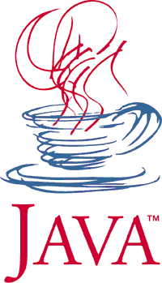
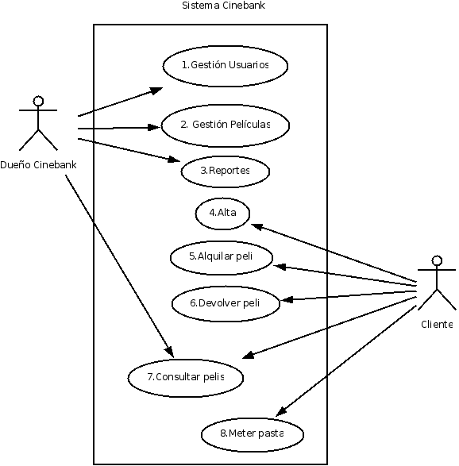
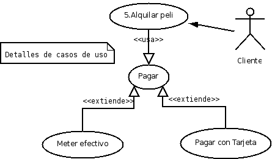
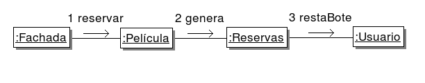
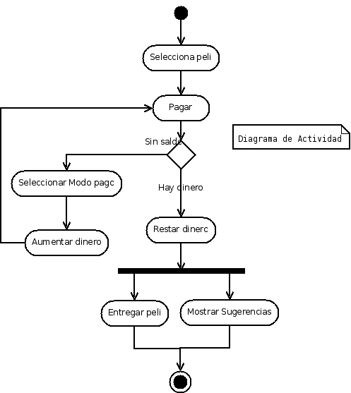
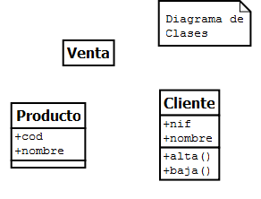
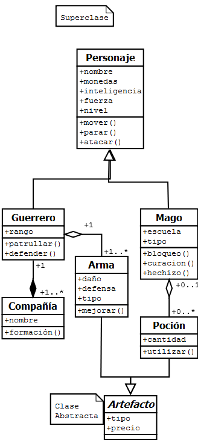
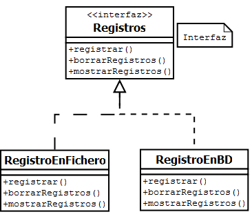
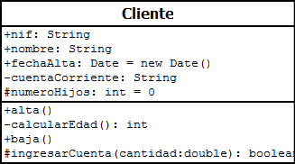
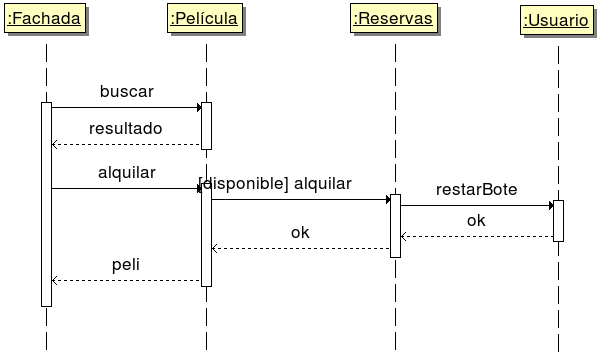

Java Jutsu
Tutorial de Java
Apuntes de Entornos de Programación
Pello Xabier Altadill Izura
1. Introducción 1
2. HolaMundo 3
3. Variables 3
4. Entrada/Salida básica 8
5. Operadores 11
6. Estructuras de control 17
7. Bucles 21
8. Arrays 26
9. Clases 29
10. Métodos 33
11. POO 35
12. Interfaces 42
13. Excepciones 49
14. API java 53
15. Threads: varias tareas a la vez 65
16. Herramientas del JDK 67
17. Sistemas de Control de versiones 75
18. Automatización de compilaciones: Ant 77
19. Testeando el software: jUnit 79
20. Refactorización de software 81
21. Lenguaje UML 83
22. Bibliografía: 89
23. Programas mencionados/útiles 89
Sun Microsystems era una empresa estadounidense que destacaba como fabricante de servidores de alto rendimiento tanto el hardware como el software, con su arquitectura y sistema operativo Unix propio.
A principio de los años 90 en Sun Microsystems estaban tratando de desarrollar un entorno para poder programar pequeños dispositivos y electrodomésticos con la finalidad de que fueran programables y pudieran interactuar entre sí. No en vano Sun siempre le ha querido dar mucha relevancia a las redes hasta el punto de que uno de sus lemas era “The net is the computer”; toda una profecía de lo que hoy se conoce como computación en la nube.
Siguiendo en esa línea visionaria en Sun trataban de crear un lenguaje de programación que pudiera funcionar en cualquier tipo de plataforma: “write once, run everywhere” era el primer lema de ese nuevo lenguaje. Un par de ideas estaban claras: debía ser orientado a objetos pero sin ser tan complicado como C++. Dicho y hecho, el proyecto empezó llamándose oak (roble) y más tarde se convirtió en un homenaje a los sufridos programadores cuyo principal combustible es un buen café: Java (en inglés café del bueno), un lenguaje de programación interpretado, similar a C++ pero quitándole lo difícil como la herencia múltiple y los temidos punteros. Todo ello para facilitar su aprendizaje, uso y extensión.
Sin embargo, lo que en principio iba a ser un lenguaje para lavadoras tuvo la suerte de coincidir con un fenómeno tecnológico: el desarrollo de la web. Java cogió la ola de los primeros navegadores y facilitó que unos programas llamados applets se pudieran ejecutar en cualquier plataforma sin necesidad de hacer versiones diferenciadas. Ello contribuyó enormemente a la popularidad de un lenguaje que poco a poco fue derivando hacia un lenguaje de propósito general, hasta el punto de convertirse en una referencia como lenguaje de servidores en aplicaciones empresariales.
A partir de la segunda versión de Java2, el lenguaje empezó a ser algo más que un juguete para especializarse en distintas ramas: aplicaciones para la web, aplicaciones empresariales, aplicaciones para smartcards y finalmente Java vuelve a sus orígenes convirtiéndose en la opción más utilizada para los pequeños dispositivos: móviles, tablets, etc…
Al igual que hicieran los Applets en los navegadores, Java puede estar presente en cualquier móvil gracias a los Midlets. E incluso uno de los sistemas más pujantes para móviles como es Android utiliza java como lenguaje de desarrollo de aplicaciones.
Actualmente Sun Microsystems, una empresa que desarrolla hardware, sistemas operativos, lenguajes de programación, ha sido comprada por la todopoderosa Oracle que se dedica principalmente a su famoso gestor de bases de datos. Oracle tenía sus propios gestores de aplicaciones y otros productos y sin embargo ha tomado un atajo y directamente se ha comprado todo: la máquina, el sistema operativo, el lenguaje de programación y los gestores de aplicaciones.
En cualquier caso, Java es un lenguaje que resulta imprescindible aprender ya sea por el desarrollo web o por la rama de móviles. Lenguajes hay muchos pero este es de los que pone las lentejas encima del plato (o los granos de café en la cafetera).
Java es un lenguaje:
Interpretado: cuando se compila se crea un código intermedio que no depende del sistema operativo o hardware subyacente.
Orientado a objetos: hasta el código más simple debe ir dentro de una clase
Fuertemente tipado: a las variables solo se les puede asignar valores de su propio tipo y nada más.
Case Sensitive: distingue mayúsculas y minúsculas.
Sintaxis muy similar a C y C++.
Para aprender a programar en Java necesitaremos el JDK en su versión estándar (como mínimo). Lo podemos encontrar en http://java.sun.com, y ahí debemos bajar el paquete más adecuado para nuestro sistema operativo. Existen alternativas como el gcj para Linux y otras implementaciones más o menos herejes pero tenemos el original disponible a coste 0.
Existen entornos avanzados para desarrollar java pero en el Java Jutsu vamos a mostrar todo le camino que debe recorrer un verdadero guerrero del código, empezando por usar sus manos desnudas: un editor de texto plano y una consola de sistema. Sería absurdo empezar con un IDE como Eclipse, ya que no le sacaríamos todo el jugo. ¿De que le serviría a un aprendiz equiparse armarse hasta los dientes y vestir armadura si no sabe usarlas? ¿Un conductor novato podría sacarle partido a un Ferrari?
Una vez lo instalemos, en la consola de sistema debemos verificar que funciona el compilador invocando el comando javac y el ejecutador probando el comando java. Si no eres capaz de hacer eso, ni si quiera buscando ayuda en internet, deja de leer esto y búscate otra profesión: verás qué feliz eres.
Lo primero que haremos es aprender a compilar y a ejecutar y una vez le demos un vistazo al lenguaje daremos un repaso a una serie de herramientas básicas de las que disponemos en el JDK: depurador, generador de documentación, etc…
Como en cualquier lenguaje vamos a empezar haciendo un ejemplo simple de programación:
import java.io.*;
/**
* clase HolaMundo
* @author Pello Altadill
*/
public class HolaMundo {
/**
* main
* Función principal
* esta función es la que se inicia directamente al ejecutar el programa
*/
public static void main (String args[]) {
System.out.println("¡Hola Mundo!");
}
}
En todo programa se suelen manejar valores de distintos tipos con los que se hacen operaciones. Algunos valores son fijos pero otros pueden variar y por eso se almacenan en variables.
En java como en cualquier otro disponemos de variables de tipos básicos para representar número enteros, reales, caracteres sueltos y cadenas de caracteres e incluso las variables booleanas cuyo valor solo puede ser verdadero o falso.
/**
* ValoresEnteros
* Clase que muestra la declaración de variables numéricas <b>enteras</b>
*
* Para compilar:
* javac ValoresEnteros.java
*
* Para ejecutarlo:
* java ValoresEnteros
*/
// Librería necesaria para trabajar con la entrada/salida
import java.io.*;
/**
* clase ValoresEnteros
* Muestra la declaración de tipos numéricos enteros básicos:
* byte : 1 byte
* short : entero corto, 2 bytes
* int : enter, 4 bytes
* long : entero largo, 8 bytes
*
* @author Pello Altadill
*/
public class ValoresEnteros {
/**
* main
* Función principal
* esta función es la que se inicia directamente al ejecutar el programa
*/
public static void main (String args[]) {
// Declaración de variables: tipo nombre;
byte dias;
short contador;
// Declaración y asignación de valor
// tipo nombre = valor inicial;
short resultado = 42;
// Declaración de varias variables del mismo tipo
short codigo, edad, media;
// Declaración y asignación a varias a la vez:
int i, j, k;
i = j = k = 0;
// El tipo long
long sueldoFutbolista = 23489343;
long valorGoogle = 666000666;
// Vamos a probar a mostrarlos por pantalla: concatenamos con +
System.out.println("El sentido de la vida es: " + resultado);
System.out.println("El sueldo de un futbolista medio es: " + sueldoFutbolista);
}
}
/**
* ValoresReales
* Clase que muestra la declaración de variables numéricas <b>de coma flotante</b>
*
* Para compilar:
* javac ValoresReales.java
*
* Para ejecutarlo:
* java ValoresReales
*/
// Librería necesaria para trabajar con la entrada/salida
import java.io.*;
/**
* clase ValoresReales
* Muestra la declaración de tipos numéricos reales o de coma flotante:
* float : real precisión simple, 4 bytes
* double : real precisión doble, 8 bytes
*
* @author Pello Altadill
*/
public class ValoresReales {
/**
* main
* Función principal
* esta función es la que se inicia directamente al ejecutar el programa
*/
public static void main (String args[]) {
// En los tipos reales debemo usar un . en lugar de , para las decimales
float temperatura;
// Al asginar valor le ponemos la F para distinguir del tipo double
float peso = 78.9F;
double saldoCuentaCorriente = 3423343.43D;
// Los valores altos se pueden abreviar:
// esto sería 4.6 multiplicado por 10 elevado a 9.
double masaJupiter = 4.6E+9D;
// Vamos a probar a mostrarlos por pantalla: concatenamos con +
System.out.println("Tu peso es : " + peso + ", y tu saldo: " + saldoCuentaCorriente);
System.out.println("La masa de Jupiter: " + masaJupiter);
}
}
/**
* ValoresCaracteres
* Clase que muestra la declaración de variables de caracteres
*
* Para compilar:
* javac ValoresCaracteres.java
*
* Para ejecutarlo:
* java ValoresCaracteres
*/
// Librería necesaria para trabajar con la entrada/salida
import java.io.*;
/**
* clase ValoresCaracteres
* Muestra la declaración de booleanos: son variables que solo
* pueden contener un caracter, encerrado en comillas simples
* por ejemplo 'a'
*
* @author Pello Altadill
*/
public class ValoresCaracteres {
/**
* main
* Función principal
* esta función es la que se inicia directamente al ejecutar el programa
*/
public static void main (String args[]) {
// Los caracteres no son más que una letra
char caracter = 'A';
char ultima = 'z';
// Los especiales comienzan por \
char nuevaLinea = '\n';
char tabulacion = '\t';
char retornoCarro = '\r';
char comillaSimple = '\'';
char contrabarra = '\\';
char dobleComillas = '\"';
char formFeed = '\f';
// Vamos a probar a mostrarlos por pantalla: concatenamos con +
System.out.println("Primera letra " + caracter + " y última: " + ultima);
System.out.println("Con la \\ usamos caracteres especiales");
System.out.println("Que parezca un \"accidente\" ");
System.out.println("Vamos a saltar \n y ahora otra vez: " + nuevaLinea);
System.out.println(tabulacion + " Vamos a ver: " + nuevaLinea + " y ahora \r");
}
}
/**
* ValoresBooleanos
* Clase que muestra la declaración de variables booleanas
*
* Para compilar:
* javac ValoresBooleanos.java
*
* Para ejecutarlo:
* java ValoresBooleanos
*/
// Librería necesaria para trabajar con la entrada/salida
import java.io.*;
/**
* clase ValoresBooleanos
* Muestra la declaración de booleanos: son variables que solo
* pueden tener dos posibles valores: true (verdadero) o false (falso)
*
* @author Pello Altadill
*/
public class ValoresBooleanos {
/**
* main
* Función principal
* esta función es la que se inicia directamente al ejecutar el programa
*/
public static void main (String args[]) {
// Solo pueden ser true o false
boolean terminado = false;
boolean aprobar = true;
boolean resultado = aprobar;
// Vamos a probar a mostrarlos por pantalla: concatenamos con +
System.out.println("Este programa ha terminado? " + terminado);
System.out.println("Aprobaré la asignatura? " + aprobar);
}
}
/**
* ValoresCadenas
* Clase que muestra la declaración de variables de cadenas o Strings
*
* Para compilar:
* javac ValoresCadenas.java
*
* Para ejecutarlo:
* java ValoresCadenas
*/
// Librería necesaria para trabajar con la entrada/salida
import java.io.*;
/**
* clase ValoresCadenas
* Muestra la declaración de Cadenas: son variables que
* contienen más de un caracter: una palabra una frase, etc...
* Para esto no existen tipos primitivos y se usa una clase
* llamada String
*
* Una clase, como ya se verá más adelante es mucho más que un tipo
* de dato. Es una tipo complejo que tiene propiedas y métodos.
*
* @author Pello Altadill
*/
public class ValoresCadenas {
/**
* main
* Función principal
* esta función es la que se inicia directamente al ejecutar el programa
*/
public static void main (String args[]) {
String nombre;
String frase = "A quien madruga, patada en los cojones";
String presidente;
// Podemos iniciarla con una cadena vacía
String otraFrase = "Solo quiero que seamos \"amigos\"";
int edad = 666;
presidente = "Cthulhu";
nombre = "Optimus Prime";
// Los especiales comienzan por \
char nuevaLinea = '\n';
char tabulacion = '\t';
// Podemos unir una cadena y un carácter con el operador de concatenación.
frase = frase + nuevaLinea;
// Vamos a probar a mostrarlos por pantalla:
System.out.println(frase);
// Al concatenar números se convierten en cadenas
frase = presidente + " tiene : " + edad + " años";
System.out.println("La frase queda así: \n" + frase);
System.out.println("Y la otra frase: \n" + otraFrase);
}
}
Es necesario presentar este tema para poder hacer programas algo más útiles que sean capaces de recibir una entrada variable en el momento de ejecución. A continuación veremos las dos formas básicas de pasar argumentos a un programa en Java.
En algunos casos es necesario llevar a cabo una conversión de cadenas de caracteres a números.
/**
* ValoresCadenasArgumentos
* Clase que muestra la declaración de variables de cadenas o Strings
* y cómo pasarles lo que viene como argumento
*
* Para compilar:
* javac ValoresCadenasArgumentos.java
*
* Para ejecutarlo:
* java ValoresCadenasArgumentos
*/
// Librería necesaria para trabajar con la entrada/salida
import java.io.*;
/**
* clase ValoresCadenasArgumentos
* Clase que muestra la declaración de variables de cadenas o Strings
* y cómo pasarles lo que viene como argumento. Los argumentos se trasvasan
* a través del parámetro args[] de la función main. Ese parámetro es un conjunto
* de Strings o Cadenas: args[0] args[1] args[2] …
*
*
* @author Pello Altadill
*/
public class ValoresCadenasArgumentos {
/**
* main
* Función principal
* esta función es la que se inicia directamente al ejecutar el programa
*/
public static void main (String args[]) {
// En el caso de que el argumento sea una frase al ejecutar el programa la pasaríamos así:
// C:\jdk>java ValoresCadenasArgumentos "Dios le ayuda"
String frase = "A quien madruga, " + args[0];
System.out.println("El primer argumento es: " + args[0]);
System.out.println("La frase final: \n" + frase);
}
}
/**
* ValoresEnteros
* Clase que muestra la declaración de variables numéricas enteras
* y cómo pasarles lo que viene como argumento
*
* Para compilar:
* javac ValoresEnteros.java
*
* Para ejecutarlo:
* java ValoresEnteros
*/
// Librería necesaria para trabajar con la entrada/salida
import java.io.*;
/**
* clase ValoresEnteros
* Muestra la declaración de tipos numéricos enteros básicos:
* y cómo pasarles lo que viene como argumento. En el caso
* de los enteros HAY QUE CONVERTIR lo que viene por el argumento
* porque viene como un String!
*
* @author Pello Altadill
*/
public class ValoresEnterosArgumentos {
/**
* main
* Función principal
* esta función es la que se inicia directamente al ejecutar el programa
*/
public static void main (String args[]) {
// Declaración de variables: tipo nombre;
int dias;
short contador;
String diasString;
// Así no hay problemas porque son del MISMO TIPO
diasString = args[0];
// Atención a la CONVERSIÓN. Utilizamos la clase Integer,
// y sú metodo para convertir de String a int
dias = Integer.parseInt(args[0]);
// Con los short y con cualquier otro tipo básico hariamos
// lo mismo, usar su clase correspondiente y la misma función:
contador = Short.parseShort(args[0]);
// ATENCIÓN: si lo que pasamos como argumento NO ES un entero
// el programa casca irremediablemente y vomita una excepción
// Vamos a probar a mostrarlos por pantalla: concatenamos con +
System.out.println("El total de días es: " + dias);
System.out.println("El contador queda así: " + contador);
}
}
/**
* EntradaPorConsola
* Clase que como solicitar datos al usuario y guardarlos
* en variables.
*
* Para compilar:
* javac EntradaPorConsola.java
*
* Para ejecutarlo:
* java EntradaPorConsola
*/
// Librería necesaria para trabajar con la entrada/salida
import java.io.*;
/**
* clase EntradaPorConsola
* Muestra como se solicitan datos al usuario por consola y guardarlos
* en todo tipo de variables.
* En el caso
* de los enteros HAY QUE CONVERTIR lo que viene por el argumento
* porque viene como un String!
*
* @author Pello Altadill
*/
public class EntradaPorConsola {
/**
* main
* Función principal
* esta función es la que se inicia directamente al ejecutar el programa
*/
public static void main (String args[]) throws IOException {
// Para leero por consola hay que crear
// una instancia de Console
Console consola = System.console();
// Declaración de variables: tipo nombre;
int edad;
float temperatura;
String lectura;
boolean booleano;
// Para solicitar datos al usuario, usamos el método
// readLine();
// Primero avisamos al usuario:
System.out.println("Por favor, introduce un texto cualquiera: ");
// Así no hay problemas porque son del MISMO TIPO
lectura = consola.readLine();
// Y mostramos por pantalla lo que el usuario ha metido
System.out.println("Has escrito: " + lectura + "\n");
// Primero avisamos al usuario:
System.out.println("Por favor, introduce un número con decimales: ");
lectura = consola.readLine();
// Atención a la CONVERSIÓN. Utilizamos la clase Float,
// y sú metodo para convertir de String al tipo simple float
temperatura = Float.parseFloat(lectura);
// Y mostramos por pantalla lo que el usuario ha metido
System.out.println("Has escrito: " + temperatura + "\n");
// Primero avisamos al usuario:
System.out.println("Por favor, introduce tu edad: ");
lectura = consola.readLine();
// Atención a la CONVERSIÓN. Utilizamos la clase Integer,
// y sú metodo para convertir de String al tipo simple int
edad = Integer.parseInt(lectura);
// Y mostramos por pantalla lo que el usuario ha metido
System.out.println("Has escrito: " + edad);
// Vamos a solicitar un booleano
System.out.println("Por favor, introduce un valor booleano: ");
lectura = consola.readLine();
// Atención a la CONVERSIÓN. Utilizamos la clase Boolean,
// y sú metodo para convertir de String al tipo simple boolean
booleano = Boolean.parseBoolean(lectura);
// Y mostramos por pantalla lo que el usuario ha metido
System.out.println("Has escrito: " + booleano);
}
}
Para cualquier programa es fundamental realizar operaciones de cálculo, de comparación e incluso de lógica. Para esas tareas básicas disponemos de unos operadores básicos.
/**
* OperadoresAritmeticos
* Clase que muestra el uso de operadores aritméticos: suma, resta...
*
* Para compilar:
* javac OperadoresAritmeticos.java
*
* Para ejecutarlo:
* java OperadoresAritmeticos
*/
// Librería necesaria para trabajar con la entrada/salida
import java.io.*;
/**
* clase OperadoresAritmeticos
* Muestra la declaración de operadores arítmeticos:
* +, -, *, / : suma, resta, multiplicación, división
* % : resto de la división: 7 % 3 = 1
* ++, -- : incremento y decremento en 1
* - : cambio de signo
*
* Por último tenemos un operador condicional o terciario: ?:
* que equivale a una estructura if-else. Mostramos un
* ejemplo simple
*
* @author Pello Altadill
*/
public class OperadoresAritmeticos {
/**
* main
* Función principal
* esta función es la que se inicia directamente al ejecutar el programa
*/
public static void main (String args[]) {
int a,b,c;
float x,y,z;
a = b = c = 0;
x = y = z = 0;
// Mostramos los valores antes y después
System.out.println("a:" + a + ", b:" + b + ", c:" + c);
System.out.println("x:" + x + ", y:" + y + ", z:" + z);
a = b + 45;
c = a * 666;
x++;
y = --z;
System.out.println("a:" + a + ", b:" + b + ", c:" + c);
System.out.println("x:" + x + ", y:" + y + ", z:" + z);
// Para operaciones en las que el resultado vaya a una de los propios
// operandos (x = x + 4) podemos usar una operadores de asignación especial:
// += , -=, *=, /=, %=
a += 666;
c %= 2;
// Atención a la diferencia entre ++c y c++:
// a = ++c primero se incrementa c, luego se asigna a a
// b = c++ primero se asigna a b, luego se incrementa c
a = b = c = 0;
c = 2;
a = ++c;
b = c++;
System.out.println("a:" + a + ", b:" + b + ", c:" + c);
// Podemos hacer las operaciones más complejas.
// para asegurar y aclarar el orden de operaciones podemos
// meter paréntesis.
x = (y *34) + 42 - (1000 % z);
// El operador condicional ?: permite asignar dos valores alternativos
// según una condición:
// (condición)?valor_si_condición_es_verdadera:valor_en_caso_contrario
// Si y es mayor que 0 a x se le asigna y, en caso contrario a x se le asigna 5
z = (y > 0)?y:5;
System.out.println("x:" + x + ", y:" + y + ", z:" + z);
}
}
/**
* OperadoresComparacion
* Clase que muestra el uso de operadores de comparación
*
* Para compilar:
* javac OperadoresComparacion.java
*
* Para ejecutarlo:
* java OperadoresComparacion
*/
// Librería necesaria para trabajar con la entrada/salida
import java.io.*;
/**
* clase OperadoresComparacion
* Muestra el uso de los operadores de comparación que sirven para comparar
* entre si dos valores. Es importantes saber que:
* - Los dos valores comparadods deben ser del mismo tipo
* - El resultado es booleano, es decir verdadero o falso
*
* Los operadores de comparación son los siguientes:
* > mayor que, por ejemplo a mayor que b: a > b
* < menor que
* == igual que
* >= mayor o igual que
* <= menor o igual que
* != distinto de
*
* Normalmente se utilizan como expresiones para establecer una condición
* en estructuras condicionales, bubles, etc... y unidos mediante operadores
* booleanos pueden construirse expresiones más complejas
*
* @author Pello Altadill
*/
public class OperadoresComparacion {
/**
* main
* Función principal
* esta función es la que se inicia directamente al ejecutar el programa
*/
public static void main (String args[]) {
// Solo pueden ser true o false
boolean resultado;
int enano, grande;
char letra = 'a';
char otraLetra = 'k';
char mayuscula = 'A';
String autobot = "Optimus";
String decepticon = "Megatron";
String agente = "007";
enano = grande = 0;
resultado = (enano == grande);
System.out.println("Son iguales enano y grande? " + resultado);
grande = 42;
// Podemos comparar y mostrar directamente.
// la comparación la ponemos entre paréntesis por claridad
System.out.println("Son iguales enano y grande? " + (enano == grande));
System.out.println("Es enano mayor que grande? " + (enano > grande));
System.out.println("Es enano menor que grande? " + (enano < grande));
System.out.println("Es enano distinto de grande? " + (enano != grande));
// Podemos comparar letras e incluso cadenas
resultado = (letra > otraLetra);
System.out.println("Es 'a' mayor que 'k' " + resultado);
resultado = (letra == mayuscula);
System.out.println("Es 'a' igual que 'A' " + resultado);
// Con las cadenas podemos usar == y !=
System.out.println("Optimos es igual que Megatron? " + (autobot == decepticon));
System.out.println("Optimos es distinto de Megatron? " + (autobot != decepticon));
// Esto no podriamos
//System.out.println("Y si una palabra empieza por un número? " + (agente > autobot));
}
}
/**
* OperadoresBooleanos
* Clase que muestra el uso de operadores booleanos
*
* Para compilar:
* javac OperadoresBooleanos.java
*
* Para ejecutarlo:
* java OperadoresBooleanos
*/
// Librería necesaria para trabajar con la entrada/salida
import java.io.*;
/**
* clase OperadoresBooleanos
* Muestra el uso de los operadores booleanos: se trata de operaciones
* que operan sobre sentencias y cuyo resultado es un booleano, true o false.
* Las operaciones son:
* && : operación AND, a && b: el resultado es verdadero si a y b son verdaderos
* || : operación OR, a || b: el resultado es verdadero si cualquiera de los dos es verdadero
* ! : operación NOT, !a : invierte el valor booleano de a. Si a es true !a devuelve false.
*
* @author Pello Altadill
*/
public class OperadoresBooleanos {
/**
* main
* Función principal
* esta función es la que se inicia directamente al ejecutar el programa
*/
public static void main (String args[]) {
// probaremos con algunos enteros
int bajo, alto, mediano;
bajo = 4;
alto = 666;
mediano = 42;
// Solo pueden ser true o false
boolean a = false;
boolean b = true;
boolean c = true;
boolean resultado = false;
resultado = a || b;
System.out.println("Si alguno entre A o B es true el resultado es: " + resultado);
resultado = b && c;
System.out.println("B y C son true por tanto el resultado es: " + resultado);
resultado = !(b && c);
System.out.println("B y C son true, pero si le hacemos un NOT: " + resultado);
// Vamos a combinarlo con operadores de comparación
resultado = (bajo < mediano) && (mediano < alto);
System.out.println("El resultado es: " + resultado);
resultado = (bajo == mediano) || (mediano <= alto);
System.out.println("El resultado es: " + resultado);
}
}
/**
* OperadoresBits
* Clase que muestra el uso de operadores de bits
*
* Para compilar:
* javac OperadoresBits.java
*
* Para ejecutarlo:
* java OperadoresBits
*/
// Librería necesaria para trabajar con la entrada/salida
import java.io.*;
/**
* clase OperadoresBits
* Muestra el uso de operadores de bits. Su uso no es que sea muy frecuente
* pero suele estar presente en todos los lenguajes tipo c.
*
* & : AND Conjunción de bits: 1011 & 1001 = 1001
* | : OR disjunción de bits: 1011 | 1001 = 1011
* ^ : XOR disjunción excluyente de bits: 1011 ^ 1001 = 0010
* <<: desplazamiento de bits a la izquierda
* >>: desplazamiento de bits a la derecha
*
*
*
* @author Pello Altadill
*/
public class OperadoresBits {
/**
* main
* Función principal
* esta función es la que se inicia directamente al ejecutar el programa
*/
public static void main (String args[]) {
int numero1, numero2;
numero1 = 0x0010;
numero2 = 0x1101;
System.out.println("Resultado: \n" + (numero1 & numero2));
System.out.println("Resultado: \n" + (numero1 | numero2));
// se puede abreviar:
// numero1 = numero1 & numero2;
numero1 &= numero2;
// Para operaciones en las que el resultado vaya a una de los propios
// operandos (numero1 = numero1 & 0x1111) podemos usar una operadores de asignación //especial:
// &=, |=, ^=, >>=, >>>=, <<=
}
}
Los programas pueden necesitar tener un comportamiento variables según determinadas condiciones. Para eso disponemos de las estructuras de control condicionales if-else.
Y en caso de que la dirección de programa la decida el valor concreto de una variable podemos usar el switch-case, muy típico en los menús.
/**
* If
* Clase que muestra el uso de un bloque condicional if
*
* Para compilar:
* javac If.java
*
* Para ejecutarlo:
* java If
*/
// Librería necesaria para trabajar con la entrada/salida
import java.io.*;
/**
* clase If
* Muestra el uso de un bloque condicional if, cuyo interior solo
* se ejecuta si la condición del if es verdadera
* if (condición) {
* sentecias_bloque_if;
* }
*
* @author Pello Altadill
*/
public class If {
/**
* main
* Función principal
* esta función es la que se inicia directamente al ejecutar el programa
*/
public static void main (String args[]) {
// Declaramos una variable.
int x = 666;
int y = 0;
if (x == 666) {
System.out.println("x lleva la marca de la bestia");
}
// La condicón del If puede ser cualquier expresión compleja siempre que devuelva un
// valor booleano
if (x > 0 && y < 0) {
System.out.println("x es positivo e y negativo");
}
// Atención: JAVA NO considera los enteros como booleanos!!
// Tradicionalmente en c y otros lenguajes similares cualquier valor que sea distinto de // se considera como un true booleano
// mientras que el 0 se considera como false.
/*
if (x) { // En JAVA NO HACER ESTO
System.out.println("x es distinto de 0");
}
if (y) { // En JAVA NO HACER ESTO
System.out.println("y es distinto de 0");
}
// por tanto !y es como preguntar si y es igual a 0
// esta forma de escribir es muy kewl pero se considera poco clara
if (!y) { // En JAVA NO HACER ESTO
System.out.println("y es 0!!");
}*/
}
}
/**
* IfElse
* Clase que muestra un bloque condicional if-else
*
* Para compilar:
* javac IfElse.java
*
* Para ejecutarlo:
* java IfElse
*/
// Librería necesaria para trabajar con la entrada/salida
import java.io.*;
/**
* clase IfElse
* Muestra el uso de un bloque condicional if-else: si se cumple la
* condición del if se ejecuta su bloque, en caso contrario se ejecuta
* el bloque del else.
* if (condición) {
* sentecias_bloque_if;
* } else {
* sentecias_bloque_else;
* }
*
* @author Pello Altadill
*/
public class IfElse {
/**
* main
* Función principal
* esta función es la que se inicia directamente al ejecutar el programa
*/
public static void main (String args[]) {
// Declaramos una variable.
int a = 666;
int b = 0;
if (a >= b) {
System.out.println("A es mayor o igual que B");
} else {
System.out.println("A es menor que B");
}
}
}
/**
* IfElseIf
* Clase que muestra un bloque condicional if-else-if
*
* Para compilar:
* javac IfElseIf.java
*
* Para ejecutarlo:
* java IfElseIf
*/
// Librería necesaria para trabajar con la entrada/salida
import java.io.*;
/**
* clase IfElseIf
* Muestra el uso de un bloque condicional if-else-if: si se cumple la
* condición del if se ejecuta su bloque, en caso contrario se comprueba la condición
* del siguiente bloque else-if... y así hasta llegar opcionalmente a un último else.
* if (condición) {
* sentecias_bloque_if;
* } else if (condición2) {
* sentecias_bloque_else_if_1;
* } else if (condición2) {
* sentecias_bloque_else_if_2;
* } else {
* sentecias_bloque_else;
* }
*
* NOTA: si todas las condicionals comprueban la igualdad de una única variable
* con un valor concreto es probable que debas usar un switch-case
* NOTA2: efectivamente, como en c aquí no hay elseif, elif, elsif, ni similares
*
* @author Pello Altadill
*/
public class IfElseIf {
/**
* main
* Función principal
* esta función es la que se inicia directamente al ejecutar el programa
*/
public static void main (String args[]) {
// Declaramos una variable.
int a = 666;
int b = 0;
if (a > b) {
System.out.println("A es mayor que B");
} else if (a==b) {
System.out.println("A es igual a B");
} else {
System.out.println("A es menor que B");
}
}
}
/**
* SwitchCase
* Clase que muestra el uso de un switch case
*
* Para compilar:
* javac SwitchCase.java
*
* Para ejecutarlo:
* java SwitchCase
*/
// Librería necesaria para trabajar con la entrada/salida
import java.io.*;
/**
* clase SwitchCase
* Clase que muestra el uso de un switch case
* Estas estructuras son como un if-else-if pero se aplican comprobando
* si una variable tiene determinado valor
*
* switch (variable) {
* case valor1 : sentencias; break;
* case valor2 : sentencias: break;
* ...
* default: sentencias;
* }
*
* NOTA: no olvides el break para cada caso.
* NOTA2: en versiones ANTERIORES al JDK1.7 el switchcase solo funciona para tipos simples (int, char), no se pueden usar Strings.
* como en algunos lenguajes interpretados.
*
* NOTA3: no se permiten los intervalos como en VB.
*
* @author Pello Altadill
*/
public class SwitchCase {
/**
* main
* Función principal
* esta función es la que se inicia directamente al ejecutar el programa
*/
public static void main (String args[]) {
int numero = 0;
int dorsal = 10;
// Según el valor de edad sacaremos un mensaje u otro
// NO hay que olvidar el break para cada CASO!!!!!!
switch (numero) {
case 0:
System.out.println("Eres un 0");
break;
case 15:
System.out.println("Eres la niña bonita");
break;
case 42:
System.out.println("Eres la respuesta a todo");
break;
case 69:
System.out.println("Eres el puerto tftp, malpensao.");
break;
default:
System.out.println("Eres un número sin personalidad: " + numero);
break;
}
// Podemos agrupar más opciones como una especia de OR:
switch (dorsal) {
case 3:
case 4:
case 5:
System.out.println("Dorsal de un defensa" + dorsal);
break;
case 10:
System.out.println("El dorsal del capitán: " + dorsal);
break;
case 9:
System.out.println("El dorsal de un ariete: " + dorsal);
break;
default:
System.out.println("Eres un número sin personalidad: " + dorsal);
break;
}
}
}
El ordenador tonto y sin embargo tiene gran capacidad de trabajo. En muchos casos necesitaremos que el ordenador lleva a cabo una tarea repetitiva mientras se cumpla una condición o para recorrer una estructura de tamaño fijo. Para cada caso tenemos un tipo de bucle.
/**
* For
* Clase que muestra el uso de un bucle for
*
* Para compilar:
* javac For.java
*
* Para ejecutarlo:
* java For
*/
// Librería necesaria para trabajar con la entrada/salida
import java.io.*;
/**
* clase For
* Muestra el uso de un bucle for. Los bucles for sirven para
* ejecutar unas sentencias un número determinado de veces.
* Los bucles while se usan cuando la condición de salida es más incierta,
* o dependemos del valor de alguna variable.
*
* Formato:
* for (inicio;condición;actualización) {
* sentencias;
* }
* @author Pello Altadill
*/
public class For {
/**
* main
* Función principal
* esta función es la que se inicia directamente al ejecutar el programa
*/
public static void main (String args[]) {
// Vamos a dar 10 vueltas.
// En los bucles for solemos usar un número como índice
// del bucle.
int i,j,k;
i = j = k = 0;
// Vamos a dar 10 vueltas: dentro del for
// - Primero iniciamos: i=0;
// - Luego ponemos la condición de salida: i>0
// - Luego ponemos la actualiación
for (i=0; i<10; i++) {
System.out.println("Dentro del bucle 1 : " + i);
}
// podemos inicializar la variable dentro del for
// pero ojo, el ámbito de z solo será el bucle for.
for (int z = 10; z>0; z--) {
System.out.println("Dentro del bucle 2 : " + z);
}
// Podemos usar más de una variable usando la ,
for (j=0, k=20; j<10 && k>0; j++, k=k-2) {
System.out.println("Dentro del bucle 3 : " + j + " , " + k);
}
// En JDK 1.7
// java.util.ArrayList<String> meses = new java.util.ArrayList<String>();
//meses.addElement("enero");
//meses.addElement("febrero");
//meses.addElement("marzo");
//…
// for (String mes : meses) {
// System.out.println(mes);
// }
// El bucle infinito:
// for (;;)
}
}
/**
* While
* Clase que muestra los bucles while
*
* Para compilar:
* javac While.java
*
* Para ejecutarlo:
* java While
*/
// Librería necesaria para trabajar con la entrada/salida
import java.io.*;
/**
* clase While
* Muestra el uso de bucles while. Este tipo de bucles
* repiten unas sentencias mientras una condición sea verdadera.
* El final no será previsible.
* Formato:
* while (true) {
* sentencias;
* }
*
* @author Pello Altadill
*/
public class While {
/**
* main
* Función principal
* esta función es la que se inicia directamente al ejecutar el programa
*/
public static void main (String args[]) {
// Vamos a usar un contador
int contador = 10;
// Ejecutamos el bucle mientras contador sea mayor que 0
while (contador > 0) {
System.out.println("Dentro del bucle " + contador);
// y vamos decrementando
contador--;
}
// Vamos a hacer otra prueba
contador = 10;
System.out.println("El siguiente bucle:");
// Atención: podemos actualizar la variable en la propia condición
while (contador-- > 0) {
System.out.println("Dentro del bucle " + contador);
}
// el bucle infinito: simplemente poniendo en la condición true
//while (true) {
// sentencias;
// }
}
}
/**
* DoWhile
* Clase que muestra los bucles while
*
* Para compilar:
* javac DoWhile.java
*
* Para ejecutarlo:
* java DoWhile
*/
// Librería necesaria para trabajar con la entrada/salida
import java.io.*;
/**
* clase DoWhile
* Muestra el uso de bucles do while. Este tipo de bucles
* es como el while, repiten unas sentencias mientras una condición sea verdadera
* pero en su caso la primera iteración sucede siempre ya que la condición se comprueba
* al final.
* Formato:
* do {
* sentencias;
* } while();
*
* @author Pello Altadill
*/
public class DoWhile {
/**
* main
* Función principal
* esta función es la que se inicia directamente al ejecutar el programa
*/
public static void main (String args[]) {
// Vamos a comprobar si un número es primo
// para eso hay que verificar que solo es divisible
// por si misma o por 1.
int numero, anterior;
// Les asignamos a las dos
numero = anterior = 7;
// para guardar el resultado
boolean esPrimo = true;
// Ejecutamos el do-while
do {
anterior--;
if (numero % anterior == 0) {
esPrimo = false;
}
} while(anterior > 2 && esPrimo);
// Mostramos el resultado
if (esPrimo) {
System.out.println("Este numero: " + numero + " es primo");
} else {
System.out.println("Este numero: " + numero + " NO es primo");
}
}
}
/**
* BreakContinue
* Clase que muestra el uso de sentencias Break Continue para
* alterar la ejecución de bucles While, Do-While, o For
*
* Para compilar:
* javac BreakContinue.java
*
* Para ejecutarlo:
* java BreakContinue
*/
// Librería necesaria para trabajar con la entrada/salida
import java.io.*;
/**
* clase BreakContinue
* Clase que muestra el uso de Break y Continue que nos sirven para
* modificar el normal comportamiento de los bucles.
* - Con break se rompe el bucle y se sale de él.
* - Con continue interrumpimos la ejecución actual del bucle y se salta a la siguiente vuelta
* sin salir del bucle.
*
*
* @author Pello Altadill
*/
public class BreakContinue {
/**
* main
* Función principal
* esta función es la que se inicia directamente al ejecutar el programa
*/
public static void main (String args[]) {
// Declaramos una serie de variables
int numero, anterior;
int x,y;
x = 10;
while (x > 0) {
if (x == 5) {
break; // salimos del bucle
}
x--;
}
// Vamos a buscar los números primos
// que hay del 2 al 20
for (numero = 2; numero < 20; numero++) {
anterior = numero;
do {
anterior--;
// En cuanto es divisible, salimos
if (numero % anterior == 0) {
break;
}
} while(anterior > 2);
// Si se ha llegado hasta el final, es primo
if (anterior == 2) {
System.out.println(numero + " es un PRIMO");
}
}
// Si tenemos dos bucles anidados,
// ¿cómo podemos salir de un bucle concreto con break?
// hay que usar una etiqueta, que es un identificador seguido de
// dos puntos:
salida:
for(x=1;x<20;x++) {
System.out.println("Bucle principal: " + x);
if (20 % x == 7) { // salimos del bucle principal
break;
}
// para salir desde el bucle interno hasta fuera
// tendremos que usar la etiqueta salida
for(y=10;y>0;y--) {
System.out.println("Bucle interno: " + y);
if (20 % y == 4) {
// Salimos de este y del bucle principal también
// pero hay que especificar la etiqueta de salida
break salida;
}
}// for2
}// for1
}
}
Un array es una variable que en lugar de contener un único valor contiene un número concreto de valores. Por ejemplo un array de 15 números, un array de 5 nombres, etc… Esta estructura es básica y algo rígida pero muchas veces suficiente.
/**
* Arrays
* Clase que muestra la declaración y uso de arrays
*
* Para compilar:
* javac Arrays.java
*
* Para ejecutarlo:
* java Arrays
*/
// Librería necesaria para trabajar con la entrada/salida
import java.io.*;
/**
* clase Arrays
* Clase que muestra la declaración y uso de arrays. Los arrays
* o arreglos son variables que contienen un conjunto de datos del mismo tipo
* indexados numéricamente desde el 0 en adelante.
*
* NOTA: pueden crearse arrays de elementos del tipo básico: int, float,...
* y también pueden crearse de clases.
* NOTA2: los arrays en java se definen con un tamaño concreto y no puede
* alterarse. Si necesitamos elasticidad entonces debemos usar clases
* como por ejemplo Vector.
*
* @author Pello Altadill
*/
public class Arrays {
/**
* main
* Función principal
* esta función es la que se inicia directamente al ejecutar el programa
*/
public static void main (String args[]) {
// Vamos a definir un array de enteros, todavía sin especificar el tamaño.
// Lo podemos hacer de dos formas:
int valores[];
int [] dorsales;
// Podemos establecer el tamaño mediante new:
// En este caso definimos un array de DIEZ elementos,
// pero ATENCIÓN, los índices irán del 0 al 9.
int [] puntos = new int[10];
// Si quisieramos crear un array de caracteres que contenga el abecedario
// lo hariamos así. El abecedario español tiene 28 letras, en el array serán
// del 0 al 27.
char abecedario[] = new char[28];
boolean verdades[] = new boolean[5];
// Podemos inicializar los arreglos con valores concretos,
// lo cual sería una forma de implícita de especificar su tamaño:
int numeros[] = {7,15,42,69,666};
char letras [] = {'a','b','c','d','e','f','g','h'};
// Podemos crear arrays de Strings
String heroes[] = {"Gandalf", "Haplo", "Jon Nieve", "Vader", "Trancos"};
// para acceder a un elemento del array debemos indicar su índice.
// el índice es un número entero que va de 0 al tamaño-1 del array
System.out.println("The number of the beast: " + numeros[4]);
// Podemos alterar valores de un elemento del array
verdades[0] = false;
numeros[2] = 23;
// Y por supuesto operar con ellos:
// al elemento 0 del array heroes le concatenamos algo:
heroes[0] = heroes[0] + " el gris";
numeros[3] = numeros[2] + 8;
// Vale, ¿que hacemos con el array? Podemos recorrerlo con un for
// Todo array tiene una propiedad que es length, la cual no da su tamaño
// Por ejemplo, los elementos del array puntos los podemos inicializar
// con un valor concreto:
for (int i = 0;i< puntos.length; i++) {
puntos[i] = 0;
}
System.out.println("Estos son los mayores heroes: ");
for (int i = 0;i < heroes.length; i++) {
System.out.println("En el índice " + i + ": " + heroes[i]);
}
}
}
/**
* Matrices
* Clase que muestra la declaración y uso de Arrays de varias dimensiones
* le he llamado Matriz por distinguir, aunque formalmente puede ser los mismo.
*
* Para compilar:
* javac Matrices.java
*
* Para ejecutarlo:
* java Matrices
*/
// Librería necesaria para trabajar con la entrada/salida
import java.io.*;
/**
* clase Matrices
* Clase que muestra la declaración y uso de Arrays de dos o más dimensiones
*
*
* @author Pello Altadill
*/
public class Matrices {
/**
* main
* Función principal
* esta función es la que se inicia directamente al ejecutar el programa
*/
public static void main (String args[])
{
// Vamos a definir un array de enteros de dos dimensiones y otro de tres
int valores[][];
int [][] dorsales;
// Podemos establecer el tamaño mediante new, y puede ser distinto para cada dimensión:
// En este caso definimos un array de DIEZ y TRES elementos
int [][] puntos = new int[10][3];
// Podemos inicializar los arreglos con valores concretos,
// lo cual sería una forma de implícita de especificar su tamaño:
int numeros[][] = {{7,15,42},{69,666,23},{5,87,1},{0,665,-1}};
char letras [][] = {{'a','b','c','d'},{'e','f','g','h'}};
// Podemos crear Matrices de Strings
String heroes[][] = {{"Gandalf","Trancos"}, {"Haplo","Alfred"},{"Jon Nieve", "Brienne"}};
// Podemos alterar valores de un elemento del array
heroes[0][1] = "Aragorn";
numeros[1][2] = 24;
// Y por supuesto operar con ellos:
// al elemento 0 del array heroes le concatenamos algo:
heroes[2][0] = heroes[2][0] + " lord Comandante";
numeros[3][1]++;
// para recorrer estos arrays con un for, hay que anidar tantos for
// como dimensiones tenga el array:
// ATENCIÓN a la forma de acceder al subarray en el segundo FOR
System.out.println("Estos son los mayores heroes, por sagas: ");
for (int i = 0;i < heroes.length; i++) {
System.out.println("Saga " + i);
for (int j = 0; j < heroes[i].length; j++) {
System.out.println("\tEn el índice " + i + "," + j +": " + heroes[i][j]);
}
}
}
}
En Java cada programa es una clase. Hasta ahora en los ejemplos lo único que hemos métido en la clase ha sido el método main que es el código principal que se ejecuta el poner en marcha el programa. Pero una clase puede ser mucho más.
Las clases son fundamentales en la programación orientada a objetos porque sirven para poder representar precisamente esos objetos. Y como objetos deben tener atributos (o propiedades) y métodos (o funciones).
En una aplicación java podemos tener un montón de clases y para usarlas debemos crear instancias de ella con lo que convertimos esa clase en una instancia. Es decir, un jugador de fútbol sería la clase y Messi la instancia (el objeto). Un coche sería la clase y un Audi4 la instancia o el objeto. Aún no nos vamos a meter mucho en la programación orientada a objetos. Pero más adelante sí.
Métodos o funciones.
Las clases contienen atributos y métodos. Los métodos son lo que en la programación tradicional se suele llamar funciones, que no son más que trozos de código que realizan una tarea concreta. Para utilizar ese código lo que se hace es llamar a la función. Gracias a eso conseguimos:
Separar el código en pequeñas partes y organizar mejor los programas, algo fundamental en la programación estructurada
Facilitar la reutilización de esas partes.
Facilitar la depuración de los programas.
Vamos a ver un ejemplo genérico.
/**
* Clases
* Clase que muestra la declaración de una clase
*
* Para compilar:
* javac Clases.java
*
* Para ejecutarlo:
* java Clases
*/
// Librería necesaria para trabajar con la entrada/salida
import java.io.*;
/**
* clase Clases
* Clase que muestra la declaración de una clase
*
* @author Pello Altadill
*/
public class Clases {
// ATRIBUTOS de CLASE
String nombre;
/**
* Método constructor, se ejecuta al crear una instancia de la clase
*/
Clases () {
nombre = "Juan Solo";
System.out.println("Has creado una instancia de la clase");
}
/**
* saludo
* Un método de la clase que simplemente saca un mensaje
*/
void saludo () {
System.out.println("Hola Mundo, soy " + nombre);
}
/**
* main
* Función principal
* esta función es la que se inicia directamente al ejecutar el programa
*/
public static void main (String args[]) {
// Creamos una INSTANCIA de la clase:
// es como declarar una variable, pero el tipo es el
// nombre de la clase
Clases unaClase = new Clases();
// Con la instancia llamamos a uno de sus métodos
unaClase.saludo();
}
}
/**
* Cliente
* Clase que muestra la declaración de una clase
*
* Para compilar:
* javac Cliente.java
*
* Para ejecutarlo:
* java Cliente
*/
// Librería necesaria para trabajar con la entrada/salida
import java.io.*;
// Libería necesaria para la clase Date
import java.util.Date;
/**
* clase Cliente
* Muestra la declaración de una clase que representa un cliente.
* Una clase se compone de atributos (propiedades) y métodos (funciones)
* La clase representa una entidad y cuando definimos una variable de
* de esa clase
*
* @author Pello Altadill
*/
public class Cliente {
// ATRIBUTOS o PROPIEDADES DE LA CLASE
public String nombre;
public String apellidos;
public Date nacimiento;
public int codigo;
// MÉTODOS DE LA CLASE: Constructores, y otras funciones
/**
* Cliente
* este es el método constructor, al que se invoca
* al crear una instancia de la clase
*/
Cliente () {
System.out.println("Has creado una instancia de Cliente");
}
/**
* Cliente
* Otro constructor con parámetros.
* Nos sirve para crear una instancia
*/
Cliente (String nombre, String apellidos, Date nacimiento, int codigo) {
System.out.println("Has creado una instancia de Cliente");
this.nombre = nombre;
this.apellidos = apellidos;
this.nacimiento = nacimiento;
this.codigo = codigo;
}
/**
* nombreCompleto
* Método que une el nombre y el apellido del Cliente
* @return resultado
*/
public String nombreCompleto () {
String resultado = nombre + " " + apellidos;
return resultado;
}
/**
* fichaCliente
* Método que muestra todos los datos del cliente
*
*/
public void fichaCliente () {
System.out.println("--Ficha del Cliente--");
System.out.println("Código: " + codigo);
System.out.println("Nombre completo: " + nombreCompleto());
System.out.println("Fecha nacimiento: " + nacimiento);
}
/**
* saluda
* Un método que nos muestra un saludo
*/
public void saluda () {
System.out.println("Hola mundo desde la clase");
}
/**
* main
* Función principal
* esta función es la que se inicia directamente al ejecutar el programa
* Y desde ella vamos a crear una instancia de Cliente
*/
public static void main (String args[]) {
// Creamos un par de instancias
Cliente unCliente = new Cliente();
Cliente otroCliente = new Cliente("Darth","Vader", new Date(), 666);
unCliente.codigo = 89;
otroCliente.fichaCliente();
unCliente.saluda();
}
}
Vamos a ver algunas opciones interesantes de las que disponemos a la hora de definir métodos en Java.
/**
* Metodos
* Clase que muestra la declaración de todo tipo de métodos
*
* Para compilar:
* javac Metodos.java
*
* Para ejecutarlo:
* java Metodos
*/
// Librería necesaria para trabajar con la entrada/salida
import java.io.*;
/**
* clase Metodos
* Muestra la declaración dedistintos tipos de métodos: constructores,
* métodos con distintos tipos de retorno, métodos que lanzan excepciones,
* métodos estáticos, métodos privados, protegidos y públicos
*
* La clase es un poco absurda pero simplemente trata de mostrar distintos
* tipos de métodos
*
* @author Pello Altadill
*/
public class Metodos {
/**
* Metodos
* Constructor sin parámetros
* estos métodos son los únicos que no devuelven algo explicitamente
*/
Metodos () {
System.out.println("Has creado instancia");
}
/**
* Metodos
* Constructor con parámetros
* estos métodos son los únicos que no devuelven algo explicitamente
*/
Metodos (String opcion) {
super();
System.out.println("Opción pasada: " + opcion);
}
/**
* estatico
* Aquellos que tienen la palabra static se consideran Método de clase,
* puede ser invocado sin que se cree una instancia
* de la clase. ver main.
* De estos métodos solo se crea una copia en memoria, al igual que pasa
* con los atributos que se declaran static.
*/
public static void estatico (int veces) {
for (int i = 0; i < veces;i++) {
System.out.println("Estático> " + i);
}
}
/**
* saludar
* Método publico que devuelve un String
* Si no ponemos nada, se considera público
* @return String
*/
String saludar () {
saludoPrivado();
return "Hola yo te saludo.";
}
/**
* saludoPrivado
* Método que saca un mensaje por consola.
* Solo se puede invocar desde dentro de la clase
*/
private void saludoPrivado () {
System.out.println("Java rulez");
}
/**
* tomarDato
* Método publico lee un valor por consola y devuelve un entero
* Puede lanzar dos excepciones
* @return String
* @throws IOException, NumberFormatException
*/
public int tomarDato () throws IOException, NumberFormatException {
Console c = System.console();
String linea = c.readLine("Dame un número: ");
return Integer.parseInt(linea);
}
/**
* main
* Función principal
* esta función es la que se inicia directamente al ejecutar el programa
* @throw IOException
*/
public static void main (String args[]) throws IOException
{
// Probamos el método estático. No necesitamos crear instancia!!!
Metodos.estatico(5);
Metodos pruebaMetodos = new Metodos("hola");
pruebaMetodos.saludar();
int entero = pruebaMetodos.tomarDato();
}
}
La POO o Programación Orientada a Objetos surge como evolución de la programación estructurada. Todo se fundamente en la forma de dividir los programas.
Cuando hay que resolver un problema en programación se aplica el divite et vinci, es decir, divide y vencerás: el problema se divide en pequeños problemas para facilitar su solución. En la programación estructurada el problema se dividía en funciones: el programa tiene que hacer esto, esto otro, etc…
Cuando se programa en POO el enfoque es diferente. El problema se divide en conceptos, es decir, en clases. Y esas clases interactúan entre si para resolver los problemas. La POO se sustenta sobre tres pilares básicos:
Encapsulación: la POO trata de crear clases o componentes que tienden a funcionar como cajas negras. De esta forma los componentes no tienen por qué conocer todos los detalles del resto y pueden ser reemplazados, mejorados o reutilizados en otra parte.
Herencia: en la POO se permite que una clase herede todos los atributos y métodos de otra. Gracias a eso la nueva subclase puede extender o especializar la clase padre y facilita el mantenimiento y mejora de las clases.
Polimorfismo: el polimorfismo consisten en poder usar el mismo nombre de función para distintos tipos de parámetros o clases. Gracias a eso desde fuera las clases tienen un aspecto uniforme y ocultan los detalles de implementación para cada caso.
/**
* ClienteVip
* Clase que muestra la declaración de una clase que extiende a otra:
* es decir muestra la HERENCIA
*
* Para compilar:
* javac ClienteVip.java
*
* Para ejecutarlo:
* java ClienteVip
*/
// Librería necesaria para trabajar con la entrada/salida
import java.io.*;
// Libería necesaria para la clase Date
import java.util.Date;
/**
* clase ClienteVip
* Muestra la declaración de ClienteVip, una extensión de la clase Cliente.
* Es un ejemplo simple de herencia, donde creamos una clase especializada
* que hereda todos los atributos y métodos de la clase padre.
* Para lograrlo debemos añadir la clausula extends en la declaración
* de la clase.
*
* @author Pello Altadill
*/
public class ClienteVip extends Cliente {
// ATRIBUTOS o PROPIEDADES DE LA CLASE extendida:
public float descuento;
// MÉTODOS DE LA CLASE: Constructores, y otras funciones
/**
* ClienteVip
* este es el método constructor, al que se invoca
* al crear una instancia de la clase
*/
ClienteVip () {
// Lamamos al constructor de la clase padre
super();
System.out.println("Has creado una instancia de ClienteVip");
}
/**
* ClienteVip
* Otro constructor con parámetros.
* Nos sirve para crear una instancia
*/
ClienteVip (String nombre, String apellidos, Date nacimiento, int codigo, float descuento)
{
// Lamamos al constructor de la clase padre
super(nombre,apellidos,nacimiento,codigo);
// Establecemos el atributo descuento
this.descuento = descuento;
System.out.println("Has creado una instancia de ClienteVip");
}
/**
* aplicarDescuento
* Método que aplica el descuento del cliente a un determinado total
* @return float resultado
*/
public float aplicarDescuento (float precioTotal) {
float resultado = precioTotal * (1-descuento);
return resultado;
}
/**
* quitarIVA
* Método que le quita el IVA al cliente de un total
* @return float
*/
public float quitarIVA (float precioTotal) {
float resultado = precioTotal * (0.82F);
return resultado;
}
/**
* fichaCliente
* Método que sobrescribe al de la clase padre Cliente,
* añadiendo un dato más.
*
*/
public void fichaCliente () {
// al principio hace los mismo que la clase padre.
super.fichaCliente();
System.out.println("CLIENTE VIP");
System.out.println("Descuento: " + descuento);
}
/**
* main
* Función principal
* esta función es la que se inicia directamente al ejecutar el programa
* Y desde ella vamos a crear una instancia de ClienteVip
*/
public static void main (String args[]) {
// Creamos un par de instancias
ClienteVip unClienteVip = new ClienteVip();
ClienteVip otroClienteVip = new ClienteVip("Frodo","Bolson", new Date(), 19, 0.10F);
unClienteVip.codigo = 89;
otroClienteVip.fichaCliente();
System.out.println("Total 109.56 euros, con descuento del " + otroClienteVip.descuento + "%: " + otroClienteVip.aplicarDescuento(109.56F));
unClienteVip.saluda();
}
}
/**
* Personaje
* Clase que muestra la declaración de una clase abstracta
*
* Para compilar:
* javac Personaje.java
*
* Para ejecutarlo:
* ¡¡NO SE PUEDE EJECUTAR!! esta clase la debe extender (heredar) otra clase hija.
*/
// Librería necesaria para sacar datos por pantalla
import java.io.*;
// Librería necesaria para los números aleatorios
import java.util.Random;
/**
* clase Personaje
* Muestra la declaración de una clase ABSTRACTA que representa un Personaje.
* De una clase abstracta no se pueden crear instancias. Sirve únicamente como
* una clase genérica de la que otras deben especializarse.
* Puede tener átributos y métodos implementados, que podrán ser heredados.
*
* @author Pello Altadill
*/
public abstract class Personaje {
// ATRIBUTOS o PROPIEDADES DE LA CLASE.
// ¿public, protected o private?
// Haciendo un chiste malo, ¿cómo considerarías
// tus propios atributos?
// - Si son públicos, es que eres un exhibicionista
// - Si son protegidos es que a alguien de confianza los enseñas
// - Si son privados, es que NUNCA los enseñarás.
// Atributos públicos, accesibles desde cualquier clase
public String nombre;
public String profesion;
// Atributos protegidos, solo accesibles desde clases HIJAS
// que extiendan esta
protected int fuerza;
protected int inteligencia;
protected int agilidad;
// Atributos privados, inaccesibles.
private int edad;
private Random aleatorio;
private int monedas;
// MÉTODOS DE LA CLASE: Constructores, y otras funciones
/**
* Personaje
* este es el método constructor, al que se invoca
*/
Personaje () {
System.out.println("Has creado una instancia de Personaje sin nombre.");
// Variable para generar números aleatorios
aleatorio = new Random();
// Llamamos a la función privada para establecer
// los atributos de fuerza, inteligencia, agilidad y edad
establecerAtributos();
// Y ahora establecemos la edad
establecerEdad();
}
/**
* Personaje
* Otro constructor con parámetros.
* Nos sirve para crear una instancia especificando el nombre y profesión
* @param String nombre
* @param String profesion
*/
Personaje (String nombre, String profesion) {
System.out.println("Has creado una instancia de Personaje");
this.nombre = nombre;
this.nombre = profesion;
// Variable para generar números aleatorios
aleatorio = new Random();
// Llamamos a la función privada para establecer
// los atributos de fuerza, inteligencia, agilidad y edad
establecerAtributos();
}
/**
* Personaje
* Otro constructor con parámetros.
* Nos sirve para crear una instancia especificando el nombre y profesión
* y otros atributos
* @param String nombre
* @param String profesion
* @param int fuerza
* @param int inteligencia
* @param int agilidad
*/
Personaje (String nombre, String profesion, int fuerza, int inteligencia, int agilidad) {
System.out.println("Has creado una instancia de Personaje");
this.nombre = nombre;
this.nombre = profesion;
this.fuerza = fuerza;
this.inteligencia = inteligencia;
this.agilidad = agilidad;
// Variable para generar números aleatorios
aleatorio = new Random();
// Y ahora establecemos la edad
establecerEdad();
}
/**
* getEdad
* Método que muestra la edad del personaje
* Sirve para poder ver la edad SIN dar acceso al atributo privado
* @return int
*/
public int getEdad () {
return edad;
}
/**
* establecerAtributos
* Método privado para establecer los atributos iniciales.
*/
private void establecerAtributos () {
// Y ahora establecemos los atributos con números aleatorios
fuerza = aleatorio.nextInt(10);
inteligencia = aleatorio.nextInt(10);
agilidad = aleatorio.nextInt(10);
edad = aleatorio.nextInt(200);
}
/**
* establecerEdad
* Método privado para establecer la edad.
*/
private void establecerEdad () {
edad = aleatorio.nextInt(200);
}
/**
* fichaPersonaje
* Método que muestra todos los datos del Personaje
*
*/
public void fichaPersonaje () {
System.out.println("--Ficha del Personaje--");
System.out.println("\tNombre: " + nombre);
System.out.println("\tProfesión: " + profesion);
System.out.println("\tEdad: " + edad);
System.out.println("--Atributos--");
System.out.println("\tFUE: " + fuerza);
System.out.println("\tINT: " + inteligencia);
System.out.println("\tAGI: " + agilidad);
}
}
/**
* PersonajeOrco
* Clase que muestra la declaración de una clase que hereda de una abstracta
* ATENCIÓN: previamente compilar la clase abstracta padre
*
* Para compilar:
* javac PersonajeOrco.java
*
* Para ejecutarlo:
* java PersonajeOrco
*/
/**
* clase PersonajeOrco
* Muestra la declaración de la clase PersonajeOrco, que extiende la clase
* abstracta Personaje. Por tanto reutiliza sus todo contenido y le permite acceder
* a atributos y métodos PÚBLICOS o PROTEGIDOS.
*
* @author Pello Altadill
*/
public class PersonajeOrco extends Personaje {
// ATRIBUTOS o PROPIEDADES DE LA CLASE.
// Esta clase puede tener algun propiedad propia
public float hedor;
public String tribu;
// MÉTODOS DE LA CLASE: Constructores, y otras funciones
/**
* PersonajeOrco
* este es el método constructor, al que se invoca
*/
PersonajeOrco () {
super();
}
/**
* PersonajeOrco
* Otro constructor con parámetros.
* Nos sirve para crear una instancia especificando el nombre y profesión
* @param String tribu
* @param float hedor
*/
PersonajeOrco (String tribu, float hedor) {
super();
this.tribu = tribu;
this.hedor = hedor;
System.out.println("Has creado una instancia de PersonajeOrco, sin nombres!");
}
/**
* PersonajeOrco
* Otro constructor con parámetros.
* Nos sirve para crear una instancia especificando el nombre y profesión
* y otros atributos
* @param String nombre
* @param String profesion
* @param String tribu
* @param float hedor
*/
PersonajeOrco (String nombre, String profesion, String tribu, float hedor) {
super(nombre, profesion);
this.tribu = tribu;
this.hedor = hedor;
System.out.println("Has creado una instancia de PersonajeOrco");
}
/**
* fichaPersonaje
* Método que muestra todos los datos del PersonajeOrco
*
*/
public void fichaPersonaje () {
super.fichaPersonaje();
System.out.println("\tRaza: ORCO");
System.out.println("\tTribu: " + nombre);
System.out.println("\tHedor: " + hedor + " olfs");
}
/**
* main
* Función principal
* esta función es la que se inicia directamente al ejecutar el programa
* Y desde ella vamos a crear una instancia de PersonajeOrco, que es una clase
* hija de la clase abstracta Personaje
*/
public static void main (String args[]) {
// Creamos un par de instancias
PersonajeOrco orcoMalo = new PersonajeOrco();
// Le establecemos el nombre y profesión
orcoMalo.nombre = "Thrall";
orcoMalo.profesion = "Maestro de armas";
orcoMalo.fichaPersonaje();
}
}
Los interfaces son una especie de Clase que sirve como contrato para realizar determinadas funciones. Un interfaz simplemente declara atributos y los prototipos de sus métodos: nombre, tipo de retorno y parámetros. A través del interface obligamos a sus implementadores a que se encarguen de desarrollar los métodos ciñéndose a los prototipos definidos.
Además de eso también sirve como mecanismo de herencia múltiple en Java.
/**
* Log
* Clase que muestra la declaración de un interfaz
*
* Para compilar:
* javac Log.java
*
* Para ejecutarlo:
* ¡¡¡NO SE PUEDE EJECUTAR!!! Debe implementarlo alguna clase.
*/
/**
* clase Log
* Clase que muestra la declaración de un interfaz.
* Los interfaces son una especie de plantilla o contrato
* que define una serie de métodos pero NO los implementa.
* Otras clases deben ser quienes implementen el interfaz y
* definir el código de esos métodos.
*
* Un interfaz no puede ejecutarse, debe implementarse por otra clase.
* Los interfaces permiten imitar en cierto modo el mecanismo de la HERENCIa MÚLTIPLE
* cosa que en java NO existe. En cambio, una clase de java puede implementar
* más de un interface.
*
* En este ejemplo definimos un interfaz llamado Log que va a servirnos para definir
* una función que permita guardar registros o eventos a modo de mensaje de texto.
* A partir de este interfaz se pueden crear distintas implementaciones: una que muestre
* los logs en pantalla, otra que los almacene en memoria, otra implementación que guarde
* los logs en un fichero.
*
* NOTA: No se necesitan los modificadores public, protected o private, SOLO se acepta public.
* Si no se pone nada se asume por tanto que es public.
* NOTA2: NINGÚN método puede estar definido.
*
* @author Pello Altadill
*/
public interface Log {
/**
* Los interfaces pueden definir atributos
* pero DEBE asignársele un valor!
*/
// Este será un prefijo que mostrarán todos los mensajes
public String prefijo = "Log> ";
// Este será un contador de los mensajes mostrados
public static int totalMensajes = 0;
// Este es el método que deberán definir las clases
// que implmenten este interfaz
public void log (String msg);
// Este añade el mensaje al log.
public void append (String msg);
}
/**
* LogConsola
* Clase que muestra la implementación de un interfaz
*
* Para compilar:
* javac LogConsola.java
*
* Para ejecutarlo:
* java LogConsola
*/
// Librería necesaria para trabajar con la entrada/salida
import java.io.*;
// Librería necesaria para la clase Date
import java.util.Date;
/**
* clase LogConsola
* Esta clase muestra cómo se interpreta la interfaz Log.
* La clase por tanto debe preocuparse de implementar las dos funciones
* log y append.
*
* Aparte de eso, LogConsola es una clase normal y puede tener más funciones,
* atributos, constructores, etc...
*
* @author Pello Altadill
*/
public class LogConsola implements Log {
// Esta variable índica la fecha del último log
private Date fecha;
/**
* LogConsola
* método constructor
*/
LogConsola () {
}
/**
* log
* Método definido por el interfaz que debemos implementar.
* En esta implementación, log muestra un mensaje por pantalla
* @param String
*/
public void log (String msg) {
fecha = new Date();
System.out.println(prefijo + fecha + "> " + msg);
}
/**
* append
* Método definido por el interfaz que debemos implementar
* Se encarga de añadir un texto a un log
* @param String
*/
public void append (String msg) {
System.out.print(msg);
}
}
/**
* LogFichero
* Clase que muestra la implementación de un interfaz
*
* Para compilar:
* javac LogFichero.java
*
* Para ejecutarlo:
* java LogFichero
*/
// Librería necesaria para trabajar con la entrada/salida
import java.io.*;
// Librería necesaria para la clase Date
import java.util.*;
/**
* clase LogFichero
* Esta clase muestra cómo se interpreta la interfaz Log.
* La clase por tanto debe preocuparse de implementar las dos funciones
* log y append. En este caso lo hace guardando los mensajes en un fichero
*
* Aparte de eso, LogFichero es una clase normal y puede tener más funciones,
* atributos, constructores, etc...
*
* @author Pello Altadill
*/
public class LogFichero implements Log {
// Esta variable índica la fecha del último log
private Date fecha;
// Esta variable indica el nombre del fichero de log
private String nombreFichero;
// Estos atributos los necesitamos para escribir en un fichero
private File fichero;
private FileWriter escritorFichero;
private BufferedWriter bufferEscritura;
/**
* LogFichero
* método constructor
*/
LogFichero () {
nombreFichero = "logs.txt";
abrirFichero();
}
/**
* LogFichero
* método constructor con parámetro para indicar el nombre del fichero
* @param String fichero
*/
LogFichero (String nombreFichero) {
this.nombreFichero = nombreFichero;
abrirFichero();
}
/**
* finalize
* método que se invoca automáticamente al eliminarse el objeto
* Lo aprovechamos para asegurarnos de que se cierra el fichero
*/
public void finalize () {
cerrarFichero();
}
/**
* cerrarFichero
* método para cerrar el fichero
*/
public void cerrarFichero () {
try {
bufferEscritura.close();
escritorFichero.close();
} catch (IOException ioe) {
System.err.println("Error al cerrar: " + ioe.getMessage());
} catch (Exception e) {
System.err.println("Ocurrió otro error no controlado: " + e.getMessage());
}
// Con esto capturamos cualquier otra cosa, es lo más genérico
/*catch (Throwable t) {
throw(t);
}*/
}
/**
* abrirFichero
* Método privado que abre el fichero
*/
private void abrirFichero () {
try {
fichero = new File(nombreFichero);
escritorFichero = new FileWriter(fichero);
bufferEscritura = new BufferedWriter(escritorFichero);
} catch (IOException ioe) {
System.err.println("Error al escribir: " + ioe.getMessage());
}
}
/**
* log
* Método definido por el interfaz que debemos implementar.
* En esta implementación, log muestra un mensaje por pantalla
* Debemos capturar una excepción por si casca la escritura en el fichero
* @param String
*/
public void log (String msg) {
fecha = new Date();
// Debemos iniciar un bloque try catch por si acaso
try {
bufferEscritura.write(prefijo + fecha + "> " + msg + "\n");
} catch (IOException ioe) {
System.err.println("Error al escribir: " + ioe.getMessage());
}
}
/**
* append
* Método definido por el interfaz que debemos implementar
* Se encarga de añadir un texto a un log
* @param String
*/
public void append (String msg) {
// Debemos iniciar un bloque try catch por si acaso
try {
bufferEscritura.write(msg);
} catch (IOException ioe) {
System.err.println("Error al escribir: " + ioe.getMessage());
}
}
}
/**
* LogMemoria
* Clase que muestra la implementación de un interfaz
*
* Para compilar:
* javac LogMemoria.java
*
* Para ejecutarlo:
* java LogMemoria
*/
// Librería necesaria para trabajar con la entrada/salida
import java.io.*;
// Librería necesaria para la clase Date y Vector
import java.util.*;
/**
* clase LogMemoria
* Esta clase muestra cómo se interpreta la interfaz Log.
* La clase por tanto debe preocuparse de implementar las dos funciones
* log y append. En este caso lo hace guardando los mensajes en un objeto en memoria
*
* Aparte de eso, LogMemoria es una clase normal y puede tener más funciones,
* atributos, constructores, etc...
*
* @author Pello Altadill
*/
public class LogMemoria implements Log {
// Esta variable índica la fecha del último log
private Date fecha;
// Este objeto será quien contenga los mensajes
// Vector es una clase que nos sirve como array mejorado
private Vector mensajes;
// Contador de mensajes. Todas las implementaciones de esta clase
// van a COMPARTIR esta variable porque es STATIC
private static int contador = 0;
/**
* LogMemoria
* método constructor
*/
LogMemoria () {
mensajes = new Vector();
}
/**
* log
* Método definido por el interfaz que debemos implementar.
* En esta implementación, log guarda el mensaje en pantalla
* @param String
*/
public void log (String msg) {
fecha = new Date();
mensajes.addElement(prefijo + fecha + "> " + msg + "\n");
contador++;
}
/**
* append
* Método definido por el interfaz que debemos implementar
* Se encarga de añadir un texto a un log
* @param String
*/
public void append (String msg) {
mensajes.addElement(msg);
}
/*
* verTodo
* método que vuelca el contenido de los logs
*/
public void verTodo () {
for (int i = 0; i< mensajes.size(); i++) {
// Mostramos por pantalla.
// El objeto mensajes es un Vector de objetos y debemos especificar
// qué es lo que devuelve por eso hacemos (String)
System.out.println((String)mensajes.elementAt(i));
}
}
}
/**
* ProbarLog
* Clase que muestra el uso de las clases de log que implementan
* el interfaz Log
*
* Para compilar:
* javac ProbarLog.java
*
* Para ejecutarlo:
* java ProbarLog
*/
/**
* clase ProbarLog
* Muestra varios ejemplos de uso de las clases que implementan
* la interfaz Log.
*
* @author Pello Altadill
*/
public class ProbarLog {
/**
* main
* Función principal
* esta función es la que se inicia directamente al ejecutar el programa
*/
public static void main (String args[]) {
LogConsola logConsola = new LogConsola();
LogFichero logFichero = new LogFichero("fichero.log");
LogMemoria logMemoria = new LogMemoria();
int i = 0;
logConsola.log("Primer mensaje de log.");
logFichero.log("Primer mensaje de log.");
logMemoria.log("Primer mensaje de log.");
logConsola.log("Vamos a probar un bucle:");
for (i=0;i<10;i++) {
logConsola.append(" vuelta: " + i);
}
logConsola.append("\n");
logConsola.log("Terminado!");
logMemoria.log("Terminado!");
logFichero.log("Probando log de fichero");
logFichero.append("A ver si todo va bien.");
logFichero.log("Terminamos de probar");
logMemoria.verTodo();
logFichero.cerrarFichero();
}
}
Un programa, por muy bueno que sea, puede perder el control por razones ajenas a su código: en ocasiones se llevan a cabo operaciones que dependen de factores externos y que pueden conducir a errores sin que el programa lo pueda evitar: abrir ficheros (y que no existan), conectarse a una web (y que no haya red), recibir un valor por entrada del usuario y que sea incorrecto (se espera un número y se pasa una palabra,…) etc.
Para evitar que el programa casque y poder mantener el control del mismo, sobre esas operaciones críticas se pueden poner unos controles llamados Excepciones, que serían como las redes de los trapecistas.
Si en un programa pueden ocurrir excepciones como mínimo hay que declararlo en la cabecera de la función y si no es así hay que crear un bloque para capturar esa excepción.
/**
* Calculadora
* Clase que muestra como se controlan las excepciones
*
* Para compilar:
* javac Calculadora.java
*
* Para ejecutarlo:
* java Calculadora
*/
// Librería necesaria para trabajar con la entrada/salida
import java.io.*;
/**
* clase Calculadora
* La clase tiene funciones para solicitar datos al usuario
* y ejecutar operaciones. Si el usuario mete un dato que no debe
* el programa falla. El programa no puede coger de los huevos al usuario
* pero sí puede preveer sus errores, capturarlos y reconducir la ejecución
* para llevarla a buen puerto. Las excepciones sirven para mantener el control
* del programa ante situaciones que se escapan a nuestro control: datos de entrada,
* fallos de la red, bases de datos inconsistentes, etc...
*
* También es posible definir nuestras propias excepciones.
*
* @author Pello Altadill
*/
public class Calculadora {
public float operando1;
public float operando2;
public char operador;
public float resultado;
/**
* Calculadora
* Método constructor
*/
Calculadora () {
resultado = 0;
iniciar();
}
/**
* iniciar
* Bucle infinito para las operaciones
*/
private void iniciar () {
do {
System.out.println("Nueva operación: ");
leerOperandos();
leerOperador();
realizarOperacion();
mostrarResultado();
} while (true);
}
/**
* leerOperandos
* Solicita al usuario los dos operandos para la operación
*/
public void leerOperandos ()
{
// Para leero por consola hay que crear
// dos instancias de clases especiales de E/S
InputStreamReader lectorFlujoEntrada;
BufferedReader lectorBuffer;
String lectura = "";
try {
lectorFlujoEntrada = new InputStreamReader(System.in);
lectorBuffer = new BufferedReader(lectorFlujoEntrada);
System.out.println("POr favor, introduzca el primer operando: ");
lectura = lectorBuffer.readLine();
// Atención a la CONVERSIÓN. Utilizamos la clase Float,
// y sú metodo para convertir de String al tipo simple float
operando1 = Float.parseFloat(lectura);
System.out.println("POr favor, introduzca el segundo operando: ");
lectura = lectorBuffer.readLine();
// Atención a la CONVERSIÓN. Utilizamos la clase Float,
// y sú metodo para convertir de String al tipo simple float
operando2 = Float.parseFloat(lectura);
} catch (IOException ioe) {
System.err.println("Error al manejar entrada/salida: " + ioe.getMessage());
} catch (NumberFormatException nfe) {
System.err.println("Los datos no parecen numéricos: " + nfe.getMessage());
// Reconducimos e iniciamos.
iniciar();
}
}
/**
* leerOperador
* Solicita al usuario el operador para la operación
*/
public void leerOperador () {
// Para leero por consola hay que crear
// dos instancias de clases especiales de E/S
InputStreamReader lectorFlujoEntrada;
BufferedReader lectorBuffer;
String lectura = "";
try {
lectorFlujoEntrada = new InputStreamReader(System.in);
lectorBuffer = new BufferedReader(lectorFlujoEntrada);
System.out.println("POr favor, introduzca la operación a realizar: ");
lectura = lectorBuffer.readLine();
// La conversión es simple: del String que hemos leido sacamos el primer caracter
operador = lectura.charAt(0);
// No es el operador que esperabamos?
if (operador != '+' && operador !='-' && operador != '*' && operador != '/') {
throw new ExcepcionOperadorInvalido();
}
} catch (IOException ioe) {
System.err.println("Error en los datos de entrada: " + ioe.getMessage());
operador = '+';
} catch (ExcepcionOperadorInvalido eoi) {
System.err.println("Problemas en el operador: " + eoi.getMessage());
} catch (Exception e) {
System.err.println("Ocurrió una excepción no prevista: " + e.getMessage());
} finally {
// En la clausula finally entraría en cualquier caso, haya excepción o no
}
}
/**
* realizarOperacion
* Lleva a cabo la operación
*/
public void realizarOperacion () {
switch (operador) {
case '+':
resultado = operando1 + operando2;
break;
case '-':
resultado = operando1 - operando2;
break;
case '*':
resultado = operando1 * operando2;
break;
case '/':
resultado = operando1 / operando2;
break;
}
}
/**
* mostrarResultado
* Muestra el resultado de la operación
*/
private void mostrarResultado () {
System.out.println("\n\tEl resultado es: " + resultado +"\n\n");
}
/**
* main
* Función principal
* esta función es la que se inicia directamente al ejecutar el programa
* ATENCIÓN: debemos incluir una sentencia en la declaración de la función
* para "avisar" de que puede ocurrir un error. Lo exige el compilador
*/
public static void main (String args[]) throws IOException {
// Basta con crear la instancia
// desde el constructor se lanza el resto
Calculadora calculadora = new Calculadora();
}
}
/**
* ExcepcionOperadorInvalido
* Clase que muestra como crear una excepción personalizada
*
* Para compilar:
* javac ExcepcionOperadorInvalido.java
*
* Para ejecutarlo:
* java ExcepcionOperadorInvalido
*/
// Librería necesaria para trabajar con la entrada/salida
import java.io.*;
/**
* clase ExcepcionOperadorInvalido
* La clase extiende la clase Exception y nos sirve para crear excepciones
* personalizadas propias.
*
* También es posible definir nuestras propias excepciones.
*
* @author Pello Altadill
*/
public class ExcepcionOperadorInvalido extends Exception {
/**
* ExcepcionOperadorInvalido
* Método constructor
*/
ExcepcionOperadorInvalido () {
super();
}
/**
* ExcepcionOperadorInvalido
* Método constructor
* @param String msg
*/
ExcepcionOperadorInvalido (String msg) {
super(msg);
}
/**
* getMessage
* mensaje personalizado de la excepción
* @return String
*/
public String getMessage() {
return "Operador no válido. Debe ser +, -, * o /";
}
}
Java dispone de un montón de clases útiles para facilitarnos el trabajo. Precisamente en el paquete java.util tenemos algunas clases que veremos a continuación, en especial las que nos sirven para manejar estructuras de datos.
Vectores
/**
* Vectores
* Clase que muestra el uso de la estructura de datos Vector
*
* Para compilar:
* javac Vectores.java
*
* Para ejecutarlo:
* java Vectores
*/
// Librería necesaria para trabajar con la entrada/salida
import java.io.*;
// Librería necesaria para trabajar con Vector
import java.util.*;
/**
* clase Vectores
* Muestra el uso de la estructura de datos Vector
* El Vector es un super array que permite tamaño dinámico
* y añade muchos métodos para gestionar su contenido.
* Los elementos pueden ser cualquier objeto y se pueden repetir.
*
* @author Pello Altadill
*/
public class Vectores {
/**
* main
* Función principal
* Desde la función principal probamos un Vector
*/
public static void main (String args[])
{
Jugador crack = new Jugador("Maradona",10);
Jugador catacrack = new Jugador("Drenthe",13);
Jugador cr7 = new Jugador("Ronaldo",7);
// Creamos una instancia de Vector para guardar una plantilla
Vector plantilla = new Vector();
// Metemos unos elementos:
plantilla.addElement(crack);
plantilla.addElement(catacrack);
plantilla.addElement(cr7);
// Recorrer la estructura con un for;
for (int i = 0; i < plantilla.size();i++) {
((Jugador)plantilla.elementAt(i)).sacarDatos();
}
System.out.println("Otra pasada con Iterator:");
// Vamos a recorrer con un Iterator
Iterator iterador = plantilla.iterator();
// Nota : enumeration está algo desfasado...
// podemos usar un while
while (iterador.hasNext()) {
// Tenemos que forzar el tipo que devuelve lista a Jugador
Jugador jugadorTmp = (Jugador)iterador.next();
// Ahora ya podemos jugar con esa variable
jugadorTmp.sacarDatos();
}
// Vamos a quitar elementos:
// por referencia de objeto -el primero que encuentre-
plantilla.removeElement(cr7);
// por índice
plantilla.removeElementAt(0);
// Añadimos un elemento creado al vuelo:
plantilla.addElement(new Jugador("Torres",9));
System.out.println("Otra pasada con Enumeration:");
// Recorrer la estructura con el interfaz Enumeration
// Los elementos del Vector pasan a ser un Enumeration
// con unas funciones añadidas: hasMoreElements y nextElement
// Nota : enumeration está algo desfasado...
// podemos usar un while
for (Enumeration lista = plantilla.elements();lista.hasMoreElements();) {
// Tenemos que forzar el tipo que devuelve lista a Jugador
Jugador jugadorTmp = (Jugador)lista.nextElement();
// Ahora ya podemos jugar con esa variable
jugadorTmp.sacarDatos();
}
// Podemos dejar el Vector vacío:
plantilla.removeAllElements();
}
}
/**
* Clase Jugador
* la usamos como objeto para manejar con un vector
*/
class Jugador {
public String nombre;
public int dorsal;
/**
* Constructor
* @param String nombre
* @param int dorsal
*/
Jugador (String nombre, int dorsal) {
this.nombre = nombre;
this.dorsal = dorsal;
}
/**
* sacarDatos
* Muestra los datos de una jugador
*/
public void sacarDatos () {
System.out.println("\nNombre: " + nombre + "\nDorsal: " + dorsal);
}
}
Hashtables
/**
* Hashtables
* Clase que muestra el uso de la estructura de datos Hashtable
*
* Para compilar:
* javac Hashtables.java
*
* Para ejecutarlo:
* java Hashtables
*/
// Librería necesaria para trabajar con la entrada/salida
import java.io.*;
// Librería necesaria para trabajar con Hashtables
import java.util.*;
/**
* clase Hashtables
* Muestra el uso de la estructura de datos Hashtable
* Los hashtable son estructuras cuyos elementos por un lado tienen una clave
* que sirve como identificador único y por otro el resto de los datos de ese elemento.
* Para agregar un elemento usamos el método put, indicando la clave de ese elemento
* y el objeto que contiene. Para sacar un elemento usamos get, donde debemos indicar
* el campo clave.
* Por tanto las claves de los elementos de una Hashtable no pueden repetirse.
*
* @author Pello Altadill
*/
public class Hashtables {
/**
* main
* Función principal
* Desde la función principal probamos un Hashtable
*/
public static void main (String args[])
{
Hashtable misClientes = new Hashtable();
Cliente clienteVip = new Cliente("66666666X","Bill Gates",false);
Cliente otroCliente = new Cliente("00000042X","Asimov",false);
// Agregamos los dos clientes a la hashtable:
// primero indicamos un valor clave y luego el objeto en si
misClientes.put("66666666X",clienteVip);
misClientes.put(otroCliente.dni,otroCliente);
misClientes.put("10100100A",new Cliente("10100100A","Arale",true));
// Podemos comprobar si existe determinado elemento
// a través de su clave
if (misClientes.containsKey("00000042X")) {
((Cliente)misClientes.get("00000042X")).sacarDatos();
}
// Vamos a recorrer todo a través de las claves
Enumeration lista = misClientes.keys();
while(lista.hasMoreElements()) {
String clave = (String)lista.nextElement();
((Cliente)misClientes.get(clave)).sacarDatos();
}
// Para quitar elementos usamos también la clave:
misClientes.remove("66666666X");
// Volcamos todo a ver qué sale
System.out.println("La Hashtable está así: " + misClientes.toString());
}
}
/**
* Clase Cliente
* la usamos como objeto para manejar con un Hashtable
*/
class Cliente {
public String dni;
public String nombre;
public boolean esMujer;
/**
* Constructor
* @param String dni
* @param String nombre
* @param boolean esMujer
*/
Cliente (String dni, String nombre, boolean esMujer) {
this.dni = dni;
this.nombre = nombre;
this.esMujer = esMujer;
}
/**
* sacarDatos
* Muestra los datos de una jugador
*/
public void sacarDatos () {
String sexo = (esMujer)?"Mujer":"Hombre";
System.out.println("DNI: " + dni + "nombre: " + nombre+ " Sexo:" + sexo);
}
}
HashSets
/**
* HashSets
* Clase que muestra el uso de la estructura de datos HashSet
*
* Para compilar:
* javac HashSets.java
*
* Para ejecutarlo:
* java HashSets
*/
// Librería necesaria para trabajar con la entrada/salida
import java.io.*;
// Librería necesaria para trabajar con HashSet
import java.util.*;
/**
* clase HashSets
* Muestra el uso de la estructura de datos HashSet
* cuya peculiaridad es que forma listas en las que
* NO PUEDEN REPETIRSE LOS VALORES!!!
*
* @author Pello Altadill
*/
public class HashSets {
/**
* main
* Función principal
* Desde la función principal probamos un HashSet
*/
public static void main (String args[])
{
HashSet mesesVascos = new HashSet();
mesesVascos.add("Urtarrila");
mesesVascos.add("Otsaila");
mesesVascos.add("Martxoa");
mesesVascos.add("Apirila");
mesesVascos.add("Maiatza");
mesesVascos.add("Ekaina");
mesesVascos.add("Uztaila");
mesesVascos.add("Abuztua");
mesesVascos.add("Iraila");
mesesVascos.add("Urria");
mesesVascos.add("Azaroa");
mesesVascos.add("Abendua");
// Vamos a quitar el odiado Septiembre...
mesesVascos.remove("Iraila");
// Vamos a comprobar si Enero NO está presente...
if (!mesesVascos.contains("Enero")) {
System.out.println("Efectivamente, no existe Enero");
}
System.out.println("Volcado: " + mesesVascos.toString());
}
}
Stacks
/**
* Stacks
* Clase que muestra el uso de la estructura de datos Stack
*
* Para compilar:
* javac Stacks.java
*
* Para ejecutarlo:
* java Stacks
*/
// Librería necesaria para trabajar con la entrada/salida
import java.io.*;
// Librería necesaria para trabajar con Stack
import java.util.*;
// Librerías para poder usar SimpleDateFormat
import java.text.*;
/**
* clase Stacks
* Muestra el uso de la estructura de datos Stack
* Un Stack no es más que una Pila, es decir, un montón ,
* es decir una estructura LIFO:
* el último que entra es el primero que sale.
*
* De paso vemos el uso de Date y SimpleDateFormat
*
* @author Pello Altadill
*/
public class Stacks {
/**
* main
* Función principal
* Desde la función principal probamos un pila o Stack
*/
public static void main (String args[]) throws ParseException {
Tarea tareaTonta = new Tarea(new Date(),"Tarea tonta");
Tarea tareaImportante = new Tarea(new Date(),"Tarea fundamental para ya");
// Vamos a crear una fecha cualquiera para la tarea
SimpleDateFormat formatoFechas = new SimpleDateFormat();
Tarea otraTarea = new Tarea(new Date(), "Otra tarea cualquiera");
// ahora creamos la Pila y vamos metiendo elementos,
// uno encima de otro
Stack tareas = new Stack();
tareas.push(tareaTonta);
tareas.push(otraTarea);
tareas.push(tareaImportante);
// Metemos otra tarea creada al vuelo
tareas.push(new Tarea(new Date(),"Al vuelo"));
// Se premiten los elementos repetidos...
tareas.push(otraTarea);
// Vamos a recorrer la pila con el interfaz List
ListIterator lista = tareas.listIterator();
while (lista.hasNext()) {
Tarea t = (Tarea)lista.next();
System.out.println(t.toString());
}
// Sacamos un par de elementos, podemos recogerlo.
tareas.pop();
Tarea saliente = (Tarea)tareas.pop();
saliente.finalizar();
System.out.println(saliente.toString());
// Podemos echar un ojo al primero de la pila
// sin tener que sacarlo: método peek
Tarea arriba = (Tarea)tareas.peek();
System.out.println(arriba.toString());
}
}
/**
* Clase Tareas
* la usamos como objeto para manejar con una pila
*/
class Tarea {
public Date fecha;
public String nombre;
private boolean finalizada;
/**
* Constructor
* @param Date fecha
* @param String nombre
*/
Tarea (Date fecha, String nombre) {
this.fecha = fecha;
this.nombre = nombre;
this.finalizada = false;
}
/**
* finalizar
* Dar por finalizada la tarea
*/
public void finalizar () {
finalizada = true;
}
/**
* toString
* Devuelve una cadena con todos los datos del objeto
* @return String
*/
public String toString () {
return "Fecha: " + fecha +" Nombre: " + nombre + " Finalizada: " + finalizada;
}
}
TreeMaps
/**
* TreeMaps
* Clase que muestra el uso de la estructura de datos TreeMap
*
* Para compilar:
* javac TreeMaps.java
*
* Para ejecutarlo:
* java TreeMaps
*/
// Librería necesaria para trabajar con la entrada/salida
import java.io.*;
// Librería necesaria para trabajar con TreeMap
import java.util.*;
/**
* clase TreeMaps
* Muestra el uso de la estructura de datos TreeMap
* Un treemap no es sino una estructura de Arbol, en este
* caso ordenada por un criterio por defecto o por el que nosotros
* le digamos.
*
* @author Pello Altadill
*/
public class TreeMaps {
/**
* main
* Función principal
* Desde la función principal probamos un TreeMap
*/
public static void main (String args[])
{
Naipe n1, n2, n3, n4, n5, n6, n7, n8;
// Vamos a crear 8 cartas del mismo palo
n1 = new Naipe("Picas","10");
n2 = new Naipe("Picas","8");
n3 = new Naipe("Picas","K");
n4 = new Naipe("Picas","A");
n5 = new Naipe("Picas","Q");
n6 = new Naipe("Picas","5");
n7 = new Naipe("Picas","2");
n8 = new Naipe("Picas","J");
TreeMap baraja = new TreeMap();
// Y ahora las añadimos a nuestro arbol
// El criterio de orden será su valor
baraja.put(n1.valor,n1);
baraja.put(n2.valor,n2);
baraja.put(n3.valor,n3);
baraja.put(n4.valor,n4);
baraja.put(n5.valor,n5);
baraja.put(n6.valor,n6);
baraja.put(n7.valor,n7);
baraja.put(n8.valor,n8);
// Vamos a recorrer a ver cómo están. Para los TreeMaps hay
// un paso previo
Collection coleccionBaraja = baraja.entrySet();
Iterator lista = coleccionBaraja.iterator();
// TODO: sacar el objeto directamente
while (lista.hasNext()) {
System.out.println(lista.next().toString());
}
}
}
/**
* Naipe
* Clase que utilizaremos para probar la TreeMaps
* Representa una carta de la baraja francesa (la del poker tron!)
*/
class Naipe {
String palo;
String simbolo;
int valor;
/**
* Naipe
* Cosntructor parametrizado
* @param String palo
* @param String simbolo
*/
Naipe (String palo, String simbolo) {
this.palo = palo;
this.simbolo = simbolo;
this.valor = asignarValor();
}
/**
* asignarValor
* Segun la carta (A, K, 5,...) le asigna un valor numérico
* @return int valor de la carta
* Este método es MUY chapuzas:
* Buena candidata para refactorizar, o cambiar por un hashtable
*/
private int asignarValor () {
int resultado = 0;
if (simbolo.equals("A")) {
resultado = 14;
} else if (simbolo.equals("K")) {
resultado = 13;
} else if (simbolo.equals("Q")) {
resultado = 12;
} else if (simbolo.equals("J")) {
resultado = 11;
} else {
// Estamos dando por supuesto que cualquier otra cosa
// será un valor entre 10 y 2.
resultado = Integer.parseInt(simbolo);
}
return resultado;
}
/**
* mostrarNaipe
* Vuelca todo
*/
public void mostrarNaipe () {
System.out.println(simbolo + " de " + palo + ". Valor: " + valor);
}
}
LinkedLists
/**
* LinkedLists
* Clase que muestra el uso de la estructura de datos LinkedList
*
* Para compilar:
* javac LinkedLists.java
*
* Para ejecutarlo:
* java LinkedLists
*/
// Librería necesaria para trabajar con la entrada/salida
import java.io.*;
// Librería necesaria para trabajar con LinkedList
import java.util.*;
/**
* clase LinkedLists
* Muestra el uso de la estructura de datos LinkedList
* que consisten en listas de datos en las que
* SE PUEDEN REPETIR datos: además es una estructura
* de lista con doble enlace y puede recorrerse en ambos sentidos.
* También puede comportarse como pila, como cola, etc... ver API.
*
* @author Pello Altadill
*/
public class LinkedLists {
/**
* main
* Función principal
* Desde la función principal probamos un LinkedList
*/
public static void main (String args[])
{
LinkedList misProductos = new LinkedList();
// Creamos unos productos
Producto producto1, producto2, producto3, producto4;
producto1 = new Producto("Mayonesa Hellmans","Kraft",2.56);
producto2 = new Producto("Donuts Bombón","Panrico",2.98);
producto3 = new Producto("Chopped","El pozo",0.28);
producto4 = new Producto("Preservativos XL","Fantasmex",15.5);
misProductos.add(producto1);
misProductos.add(producto2);
misProductos.add(producto2);
misProductos.add(producto2);
misProductos.add(producto4);
misProductos.add(producto3);
misProductos.addFirst(producto2);
// incluso podemos añadir a lo bruto la propia lista a sí misma
//misProductos.addAll(misProductos);
((Producto)misProductos.getLast()).cambiarPrecio(66.6);
// Vamos a recorrer a ver cómo están.
ListIterator lista = misProductos.listIterator(0);
while (lista.hasNext()) {
((Producto)lista.next()).mostrarProducto();
}
}
}
/**
* Producto
* Clase que utilizaremos para probar la LinkedList
* Representa un producto de una tienda
*/
class Producto {
String nombre;
String marca;
private double precio;
/**
* Producto
* Constructor parametrizado
* @param String nombre
* @param String marca
* @param double precio
*/
Producto (String nombre, String marca, double precio) {
this.nombre = nombre;
this.marca = marca;
this.precio = precio;
}
/**
* cambiarPrecio
* Asigna un nuevo precio al producto
* @param double nuevoPrecio
*/
public void cambiarPrecio (double nuevoPrecio) {
precio = nuevoPrecio;
}
/**
* mostrarProducto
* Muestra por consola el detalle del producto
*/
public void mostrarProducto () {
System.out.println(nombre + " de " + marca + ". Precio: " + precio);
}
}
/**
* DividirString
* Clase que muestra el uso de la estructura de datos Vector
*
* Para compilar:
* javac DividirString.java
*
* Para ejecutarlo:
* java DividirString
*/
// Librería necesaria para trabajar con la entrada/salida
import java.io.*;
// Librería necesaria para trabajar con Vector
import java.util.*;
/**
* clase DividirString
* Muestra el uso de la clase StringTokenizer, la cual permite
* dividir una cadena según un caracter y convertirla en un array:
* "esto,es,una,cadena,de,ejemplo"
* Dividiendo esa cadena por la coma sería:
* tokens[0] == "esto"
* tokens[1] == "es"
* tokens[2] == "una"
* ...
* Esto en otros lenguajes se hace con la función split
* @author Pello Altadill
*/
public class DividirString {
/**
* main
* Función principal
* Desde la función principal probamos un Vector
*/
public static void main (String args[])
{
String cadena = "Corre Sombragris muéstranos lo que es la premura";
StringTokenizer tokens = new StringTokenizer(cadena);
// ahora recorremos los tokens
while (tokens.hasMoreTokens()) {
System.out.println("palabra: " + tokens.nextToken());
}
// Otra cadena, cuyas palabras están divididas por ":"
String otraCadena = "Juan:Martinez:Irujo:24-10-1982:Ibero";
tokens = new StringTokenizer(otraCadena,":");
System.out.println("\n Ahora salen: " + tokens.countTokens());
// ahora recorremos los tokens con un for.
// OJO! nextToken() altera el valor de countTokens, por tanto
// no se puede usar como condición del for
for (int i = 0; tokens.hasMoreTokens();i++) {
System.out.println("palabra " + i + ">" + tokens.nextToken());
}
}
}
/**
* PersonajeHilo
* Clase que muestra el uso de los hilos de ejecución concurrente
*
* Para compilar:
* javac PersonajeHilo.java
*
* Para ejecutarlo:
* java PersonajeHilo
*/
// Librería necesaria para trabajar con la entrada/salida
import java.io.*;
// Librería necesaria para el Random
import java.util.*;
/**
* clase PersonajeHilo
* Muestra el uso de hilos o threads de ejecución, lo cual permite
* que varios códigos se ejecuten en paralelo.
*
* En este caso se crea una clase que implementa la interfaz Runnable.
* Eso la convierte en un hilo. Lo único que hace es sacar un mensaje
* por la consola.
*
* @author Pello Altadill
*/
public class PersonajeHilo implements Runnable{
// nombre del hilo
private String nombre;
// array de frases que dirá el hilo
// no se puede modificar (eso es el final) y aunque
// haya muchos objetos de la clase Hilos
// solo habrá un único array frases compartido
// por todos (eso es el static)
private static final String[] frases = {"Hola", "Adios", "Qué tal", "Bien...", "Buh"};
/**
* PersonajeHilo
* Constructor
* @param String nombre
*/
PersonajeHilo (String nombre) {
this.nombre = nombre;
}
// Al implementar Runnable, esta clase debe definir una serie
// de métodos, entre otros run
/**
* run
* En un bucle infinito, saca un mensaje aleatorio por pantalla
* y no hace nada en un tiempo aleatorio de 0 a 5 sg.
* @throws InterruptedException
*/
public void run ()
{
Random rnd = new Random();
try {
while (true) {
sacarMensaje();
Thread.currentThread().sleep(rnd.nextInt(5000));
}
} catch (InterruptedException iex) {
System.err.println("Error en la ejecución del hilo");
}
}
/**
* sacarMensaje
* Saca un mensaje aleatorio por pantalla
*/
private void sacarMensaje ()
{
Random rnd = new Random();
System.out.println(nombre + "> " + frases[rnd.nextInt(4)]);
}
/**
* main
* Función principal
* Desde la función principal probamos un Vector
*/
public static void main (String args[])
{
PersonajeHilo personaje1, personaje2, personaje3, personaje4;
personaje1 = new PersonajeHilo("Cersei");
Thread hilo1 = new Thread(personaje1);
personaje2 = new PersonajeHilo("Tyrion");
Thread hilo2 = new Thread(personaje2);
personaje3 = new PersonajeHilo("Jaime");
Thread hilo3 = new Thread(personaje3);
personaje4 = new PersonajeHilo("Tywin");
Thread hilo4 = new Thread(personaje4);
// Ponemos en marcha los hilos
hilo1.start();
hilo2.start();
hilo3.start();
hilo4.start();
}
}
Mediante javac podemos compilar el código fuente para convertirlo en bytecode. El bytecode es un código que está listo para ejecutarse en cualquier máquina virtual de java (jvm), en cualquier sistema que se encuentre:
C:\> javac MiClase.java
Para preparar el fichero para su depuración mejor hacer:
C:\> javac –g MiClase.java
Si necesitamos saber que estamos usando algo desfasado
C:\> javac –deprecated MiClase.java
Si necesitamos hacer referencia a alguna librería:
C:\> javac –classpath ruta MiClase.java
Para asegurarnos de la versión de java que tenemos
C:\> javac -version
Y para sacar la ayuda:
C:\> javac -help
Mediante el comando java podemos ejecutar los programas que hemos compilado. Al ejecutar debemos, en su opción más básica, pasarle el nombre del fichero class que queremos ejecutar. NO DEBEMOS INCLUIR la extensión .class
C:\> java MiClase
También podemos ejecutar aplicaciones que están empaquetadas dentro de un fichero comprimido jar.
C:\> java –jar fichero.jar
Para asegurarnos de la versión de java que tenemos
C:\> java -version
Y para sacar la ayuda:
C:\> java -help
Un programador debiera acostumbrarse a ejecutar sus programas depurando. Casi
nos podriamos atrever a decir que debiera aprender a usar el depurador antes que el
compilador.
Un requisito importante antes de depurar sería compilar el programa con el
modificador -g. Mediante esa opción preparamos el programa para que sea destripado
por el depurador de forma más cómoda.
Tenemos un programa de ejemplo (IndiceMasaCorporal.java) el cual vamos a depurar
paso a paso. Podemos ejecutar directamente el programa pero lo habitual es establecer
un punto de interrupción y a partir de ahí vamos paso a paso.
En este primer ejemplo vamos a probar el método main, sin meternos en los métodos.
Simplemente vamos a alterar dos variables para ver cómo se comporta el programa
en esta nueva situación:
Compilamos:
C:\> java -g IndiceMasaCorporal.java
Y Ponemos en marcha el depurador
C:\> jdb
IndiceMasaCorporal
Initializing jdb ...
> stop in IndiceMasaCorporal.main MARCAMOS EL PUNTO DE INTERRUPCIÓN
Deferring breakpoint IndiceMasaCorporal.main.
It will be set after the class is loaded.
> run EJECUTAMOS LA APLICACIÓN, SE DETENDRÁ EN EL BREAKPOINT MARCADO ANTES
run IndiceMasaCorporal
Set uncaught java.lang.Throwable
Set deferred uncaught java.lang.Throwable
>
VM Started: Set deferred breakpoint IndiceMasaCorporal.main
Breakpoint hit: "thread=main", IndiceMasaCorporal.main(), line=92 bci=0
92 altura = peso = resultado = 0;
main[1] list MOSTRAMOS EL CÓDIGO FUENTE
88 */
89 public static void main (String args[]) throws Exception {
90 float altura, peso, resultado;
91
92 => altura = peso = resultado = 0;
93
94 altura = 177F;
95 peso = 80.3F;
96
97 IndiceMasaCorporal imc = new IndiceMasaCorporal(peso, altura);
main[1] step EJECUTAMOS LA LÍNEA ACTUAL
>
Step completed: "thread=main", IndiceMasaCorporal.main(), line=94 bci=6
94 altura = 177F;
main[1] step EJECUTAMOS LA LÍNEA ACTUAL
>
Step completed: "thread=main", IndiceMasaCorporal.main(), line=95 bci=9
95 peso = 80.3F;
main[1] set altura=169.0F MODIFICAMOS EL VALOR DE UNA VARIABLE
altura=169.0F = 169.0
main[1] step EJECUTAMOS LA LÍNEA ACTUAL
>
Step completed: "thread=main", IndiceMasaCorporal.main(), line=97 bci=12
97 IndiceMasaCorporal imc = new IndiceMasaCorporal(peso, altura);
main[1] set peso=65.0F MODIFICAMOS EL VALOR DE UNA VARIABLE
peso=65.0F = 65.0
main[1] next EJECUTAMOS LÍNEA ACTUAL SIN ENTRAR EN EL MÉTODO AL QUE SE LLAMA
>
Step completed: "thread=main", IndiceMasaCorporal.main(), line=99 bci=23
99 System.out.println("Vamos a calcular el IMC ");
main[1] dump imc VOLCAMOS EL CONTENIDO DEL OBJETO imc
imc = {
altura: 169.0
peso: 65.0
}
main[1] step up AVANZAMOS HASTA EL FINAL DEL MÉTODO ACTUAL. ¡AL SER EL MAIN TERMINA!
Vam> os a calcular el IMC
PesoStep completed: 65.0 y altura: 169.0
IMC=Muy bien
"thread=main", java.lang.Thread.exit(), line=731 bci=0
main[1] exit SALIMOS DEL DEPURADOR
C:\>
Vamos a llevar a cabo otra sesión entrando en métodos, mostrando información
de la clase, etc...
C:\>jdb
IndiceMasaCorporal
Initializing jdb ...
> stop in IndiceMasaCorporal.main MARCAMOS EL PUNTO DE INTERRUPCIÓN
Deferring breakpoint IndiceMasaCorporal.main.
It will be set after the class is loaded.
> run EJECUTAMOS LA APLICACIÓN, SE DETENDRÁ EN EL BREAKPOINT MARCADO ANTES
run IndiceMasaCorporal
Set uncaught java.lang.Throwable
Set deferred uncaught java.lang.Throwable
>
VM Started: Set deferred breakpoint IndiceMasaCorporal.main
Breakpoint hit: "thread=main", IndiceMasaCorporal.main(), line=92 bci=0
92 altura = peso = resultado = 0;
main[1] list main LISTAMOS EL CÓDIGO FUENTE DEL MÉTODO main
88 */
89 public static void main (String args[]) throws Exception {
90 float altura, peso, resultado;
91
92 => altura = peso = resultado = 0;
93
94 altura = 177F;
95 peso = 80.3F;
96
97 IndiceMasaCorporal imc = new IndiceMasaCorporal(peso, altura);
main[1] step EJECUTAMOS LA LÍNEA ACTUAL
>
Step completed: "thread=main", IndiceMasaCorporal.main(), line=94 bci=6
94 altura = 177F;
main[1] step EJECUTAMOS LA LÍNEA ACTUAL
>
Step completed: "thread=main", IndiceMasaCorporal.main(), line=95 bci=9
95 peso = 80.3F;
main[1] print altura MOSTRAMOS EL VALOR DE LA VARIABLE ALTURA
altura = 177
main[1] step EJECUTAMOS LA LÍNEA ACTUAL
>
Step completed: "thread=main", IndiceMasaCorporal.main(), line=97 bci=12
97 IndiceMasaCorporal imc = new IndiceMasaCorporal(peso, altura);
main[1] step EJECUTAMOS LA LÍNEA ACTUAL
>
Step completed: "thread=main", IndiceMasaCorporal.<init>(), line=27 bci=0
27 {
main[1] step EJECUTAMOS LA LÍNEA ACTUAL
>
Step completed: "thread=main", IndiceMasaCorporal.<init>(), line=28 bci=4
28 this.peso = peso;
main[1] print peso MOSTRAMOS EL VALOR DE LA VARIABLE PESO
peso = 80.3
main[1] step
>
Step completed: "thread=main", IndiceMasaCorporal.<init>(), line=29 bci=9
29 this.altura = altura;
main[1] step EJECUTAMOS LA LÍNEA ACTUAL
>
Step completed: "thread=main", IndiceMasaCorporal.<init>(), line=30 bci=14
30 }
main[1] step EJECUTAMOS LA LÍNEA ACTUAL
>
Step completed: "thread=main", IndiceMasaCorporal.main(), line=97 bci=21
97 IndiceMasaCorporal imc = new IndiceMasaCorporal(peso, altura);
main[1] print imc MOSTRAMOS EL OBJETO, AÚN ESTÁ SIN ASIGNAR
com.sun.tools.example.debug.expr.ParseException: Name unknown: imc
imc = null
main[1] step EJECUTAMOS LA LÍNEA ACTUAL
>
Step completed: "thread=main", IndiceMasaCorporal.main(), line=99 bci=23
99 System.out.println("Vamos a calcular el IMC ");
main[1] print imc MOSTRAMOS EL OBJETO, NO SALE ALGO INTELIGIBLE
imc = "IndiceMasaCorporal@17cf28b"
main[1] dump imc VOLCAMOS EL OBJETO, AHORA SE ENTIENDE ALGO
imc = {
altura: 177
peso: 80.3
}
main[1] fields IndiceMasaCorporal MOSTRAMOS CAMPOS DE LA CLASE
** fields list **
float altura
float peso
main[1] methods IndiceMasaCorporal MOSTRAMOS MÉTODOS DE LA CLASE
** methods list **
IndiceMasaCorporal <init>(float, float)
IndiceMasaCorporal <init>(java.lang.String, java.lang.String)
IndiceMasaCorporal calcularIMC()
IndiceMasaCorporal diagnostico()
IndiceMasaCorporal main(java.lang.String[])
java.lang.Object <init>()
java.lang.Object registerNatives()
java.lang.Object getClass()
java.lang.Object hashCode()
java.lang.Object equals(java.lang.Object)
java.lang.Object clone()
java.lang.Object toString()
java.lang.Object notify()
java.lang.Object notifyAll()
java.lang.Object wait(long)
java.lang.Object wait(long, int)
java.lang.Object wait()
java.lang.Object finalize()
java.lang.Object <clinit>()
main[1] class IndiceMasaCorporal MOSTRAMOS INFORMACIÓN DE LA CLASE
Class: IndiceMasaCorporal
extends: java.lang.Object
main[1] list MOSTRAMOS EL CÓDIGO FUENTE
95 peso = 80.3F;
96
97 IndiceMasaCorporal imc = new IndiceMasaCorporal(peso, altura);
98
99 => System.out.println("Vamos a calcular el IMC ");
100
101 System.out.println("Peso " + peso + " y altura: " + altura + "\n IMC=" + imc.diagnostico());
102
103 resultado = imc.calcularIMC();
104
main[1] step EJECUTAMOS LA LÍNEA ACTUAL
> Vamos a
cStep completed: alcular el I"thread=main", IndiceMasaCorporal.main(), line=101
bci=31
MC
101 System.out.println("Peso " + peso + " y altura: " + altura + "\n IMC=" + imc.diagnostico());
main[1] step EJECUTAMOS LA LÍNEA ACTUAL
>
Step completed: "thread=main", IndiceMasaCorporal.diagnostico(), line=73 bci=0
73 float imc = calcularIMC();
main[1] step EJECUTAMOS LA LÍNEA ACTUAL
>
Step completed: "thread=main", IndiceMasaCorporal.calcularIMC(), line=52 bci=0
52 float resultado = 0;
main[1] step up EJECUTAMOS LA LÍNEA ACTUAL
>
Step completed: "thread=main", IndiceMasaCorporal.diagnostico(), line=73 bci=4
73 float imc = calcularIMC();
main[1] step EJECUTAMOS LA LÍNEA ACTUAL
>
Step completed: "thread=main", IndiceMasaCorporal.diagnostico(), line=75 bci=5
75 if (imc < 18) {
main[1] step EJECUTAMOS LA LÍNEA ACTUAL
>
Step completed: "thread=main", IndiceMasaCorporal.diagnostico(), line=77 bci=15
77 } else if (imc >= 18 && imc < 25) {
main[1] step EJECUTAMOS LA LÍNEA ACTUAL
>
Step completed: "thread=main", IndiceMasaCorporal.diagnostico(), line=80 bci=32
80 return "Sobrepeso";
main[1] step EJECUTAMOS LA LÍNEA ACTUAL
>
Step completed: "thread=main", IndiceMasaCorporal.main(), line=101 bci=69
101 System.out.println("Peso " + peso + " y altura: " + altura + "\n IMC=" + imc.diagnostico());
main[1] list MOSTRAMOS EL CÓDIGO FUENTE
97 IndiceMasaCorporal imc = new IndiceMasaCorporal(peso, altura);
98
99 System.out.println("Vamos a calcular el IMC ");
100
101 => System.out.println("Peso " + peso + " y altura: " + altura + "\n
IMC=" + imc.diagnostico());
102
103 resultado = imc.calcularIMC();
104
105 }
106
main[1] step EJECUTAMOS LA LÍNEA ACTUAL
> Peso 80.3 y altura: 177
IMC=
SStep completed: obrepes"thread=main", IndiceMasaCorporal.main(), line=103 bci=78
103 resultado = imc.calcularIMC();
main[1] next EJECUTAMOS LA LÍNEA SIN ENTRAR EN LOS MÉTODOS
>
Step completed: "thread=main", IndiceMasaCorporal.main(), line=105 bci=84
105 }
main[1] next EJECUTAMOS LA LÍNEA SIN ENTRAR EN LOS MÉTODOS
>
The application exited
C:\>
Comandos habituales en jdb
Por último y como resumen, vamos a ver los comandos más signficativos
Lista de comandos básicos
help: nos muestra la ayuda.
exit: salimos del depurador
run: ejecuta el método main
list (numero línea|método): muestra el código fuente
Puntos de ruptura:
stop in Clase.Metodo : establece un punto de interrupción en un método
stop at Clase.Linea: establece un punto de interrupción en una línea
clear Clase.Metodo
clear Clase.Linea
clear: muestra los puntos de ruptura
Ejecución por pasos:
step: ejecuta la línea actual
step up: se ejecuta seguido hasta que el método actual finalice
stepi: ejecuta la instrucción actual.
next: ejecuta la línea actual, sin meterse en los métodos
Ver detalles:
print x : muestra el valor de x, x puede ser un tipo simple o una expresión
dump x : vuelca el contenido de un objeto
eval x : similar a print, evalua la expresión x
set var=x : establece x en var.
class Clase :
methods Clase
fields Clase
trace methods: nos avisa cuando se invocan métodos
watch campo: nos avisa cuando se accede a un campo
Otras opciones:
Podemos crear un guión de inicio con un fichero llamado jdb.ini o .jdbrc
Javadoc es una potente herramienta que nos permite generar de forma automática la documentación o API de nuestro código. Es un programa que investiga el código fuente y saca los atributos y métodos de cada clase y los presenta en un informe en xHTML.
Para poder sacarle jugo a javadoc es impresdincible comentar el código de la forma adecuada usando ciertas palabras clave en los comentario que se espera javadoc:
@version: para indicar una versión del programa
@author: el autor del código
@param: en un método, para indicar un parámetro
@return: en un método, para indicar el tipo de retorno
@throw: en un método, para indicar los tipos de excepciones que pueden salir
Además de eso dentro de los comentarios podemos meter etiquetas xHTML básicas para poder tener texto en negrita, cursiva, etc.. además de otras notaciones para poner referencias a otras clases.
<b>Esto saldría en negritya</b>
<i>Esto sacaría el texto en cursiva</i>
{@link OtraClase} : genera un enlace a la documentación de otra clase
Algunos ejemplos de uso de javadoc serían:
javadoc *.java: genera la documentación en el propio directorio.
javadoc –keywords –linksource *.java: además de lo anterior incluye metainformación en los informes y genera el código java en xHTML, útil para publicarlo en la web.
javadoc –locale es_ES –private *.java: usa el formato es_ES para formato de fechas, números, etc… y prívate hace que también se documenten atributos y métodos privadoss. Por defecto se generan los protected, cosa lógica cuando se documenta un API para terceros.
Mediante el comando jar podemos unir todos los ficheros de una aplicación e incluirlos en un único fichero. De esta forma facilitamos su logística a la hora de instalarlo, moverlo por la web, firmarlo digitalmente, etc…
Jar empaqueta y además comprime los contenidos. De forma automáticamente puede incluir un fichero especial llamado META-INF/Manifest.mf que incluye la información relativa a los ficheros de la aplicación. Vamos a ver los comandos más habituales:
jar cf resultado.jar fichero(s) : Genera un nuevo fichero jar (resultado.jar) con todos los ficheros y directorios que se le digan.
jar tf fichero.jar: Muestra el contenido de un fichero jar.
jar xf fichero.jar : Extrae TODOS los contenidos de un fichero jar
jar xf fichero.jar fichero(s): Extrae los ficheros especificados de un fichero jar.
java –jar fichero.jar: Ejecuta una aplicación empaquete en un jar. Es imprescindible que en la aplicación exista una clase con el método main.
jar uf fichero.jar fichero(s): actualiza un fichero jar para incluir nuevo fichero(s).
Concurrent Versioning Sistem, es un gestor de versiones con muchos años de existencia. Ha sido sustituido por Subversion y los comandos son los mismos, solo que en lugar de escribir cvs hay que poner svn.
CVS es un proyecto que no se va a desarrollar más y ha sido sustituido por Subversion. Se puede decir que sabiendo CVS ya sabes Subversion o mejor dicho SVN.
SVN es como CVS, solo cambia que al ejecutar los comandos en lugar de poner cvs ponemos svn.
En la red existen infinidad de alojamientos de servidores SVN gratuitos, desde el propio Google Code, Sourceforge hasta sitios específicos que permiten privacidad como Beanstalk.
Para empezar a trabajar con subversión necesitamos dos cosas:
Un proyecto con uno o más ficheros (obviamente)
Un alojamiento en un servidor SVN
Primera importación
Lo primero que debemos hacer es poner nuestros ficheros bajo un sistema de control de versiones. Para ello debemos hacer un import de nuestros fichero al servidor SVN. La forma de validarse puede variar según el servidor (puede ser local, remoto vía svn, vía ssh+svn, etc..)
En consola sería así:
C:\> svn import c:\Proyecto http://code.google.com/proyecto -m "Primer import"
Nos pedirá el usuario/password si procede y posteriormente subira los ficheros del proyecto de uno en uno. “Primer import” es una descripción que se le da al software en ese momento.
Primer checkout
Ahora que ya tenemos el código en un repositorio Subversion ya podemos hacer un checkout, que significa que nos bajamos todo el proyecto desde el repositorio.
Tendremos los mismos ficheros que antes solo que ahora podremos controlar cada cambio que se haga en el fichero. Para ello subversión incluye una serie de ficheros dentro del directorio oculto .svn. En consola sería así, en este caso descargando todo el proyecto en un directorio aparte (c:\> desarrollo) para el trabajo del día a día con el código
C:\> md desarrollo
C:\> cd
desarrollo
C:\desarrollo>
C:\desarrollo> svn checkout
http://code.google.com/proyecto
A partir de aquí ya podemos añadir, modificar, eliminar ficheros del proyecto y luego actualizar el repositorio. Para todos esos pasos es imprescindible finalizar con un comando commit, que es el que ratifica los cambios en el servidor.
Modificar
Una vez nos hemos bajado el proyecto del repositorio, cualquier cambio que hagamos será detectado de forma automática y tendremos que ejecutar un commit de los ficheros modificados o un update a secas que detecte los cambios:
C:\desarrollo> svn commit –m “primeros cambios”
Añadir
Si creamos nuevos ficheros o directorios al proyecto previamente debemos ejecutar un comando add y luego un commit.
C:\desarrollo> svn add nuevo_fichero.java otro.java directorio
C:\desarrollo> svn commit –m “primeros cambios”
Eliminar
De la misma forma que añadir, al eliminar marcamos los ficheros y con el commit se ratifica la orden. Los ficheros se borran físicamente, ojo.
C:\desarrollo> svn del fichero.java directorio
C:\desarrollo> svn commit –m “Eliminados”
Si nos arrepentimos, antes del commit debemos hacer un revert
C:\desarrollo> svn revert fichero.java
Renombrar
Esto sirve para renombrar o mover un fichero dentro del proyecto. Subversion hace una copia y luego borra el original.
C:\desarrollo> svn move fichero.java fichero2.java
C:\desarrollo> svn commit –m “renombrado”
Copiar
Esto es como copiar un fichero dentro del repositorio.
C:\desarrollo> svn del fichero.java nuevo.java
C:\desarrollo> svn commit –m “Fichero copiadp”
Comprobar diferencias
Si queremos saber las diferencias entre el código local y el del repositorio podemos ejecutar un comando diff, que nos dará un resumen de todo o de lo que le pidamos.
C:\desarrollo> svn diff
Actualizar nuestra copia
Mediante el comando update podemos actualizar nuestra copia del repositorio. Algo habitual para cuando alguien quiere tener el código a la última.
Resulta que Linus Torvalds no estaba a gusto con el sistema de control de versiones que utilizaba y como un verdadero programador machote de la vieja escuela dijo: “me voy a hacer mi propio sistema a mi gusto”. Y la historia se volvió a repetir: ese proyecto que desarrolló a su bola se compartió por la red y hoy en día es usado por millones de personas. Claro que siendo conocido es más fácil que pase eso…
GIT rompe un poco los esquemas tradicionales de los sistemas de control de versiones
En resumen:
Iniciar un repositorio: entramos en el directorio donde está el proyecto y:
git init
Añadimos ficheros al repositorio
git add ficheros
git add directorios
Y los guardamos
git commit
<?xml version="1.0"?>
<!-- ejecutar: ant -->
<!-- y por defecto llevará a cabo la acción por defecto. -->
<project name="ant Hello World" default="ejecutar" basedir=".">
<property name="dir.src" value="."/>
<target name="compilar" description="Compilar todo">
<javac srcdir="${dir.src}" destdir="${dir.src}"/>
</target>
<target name="ejecutar" depends="compilar" description="Ejecutar">
<echo message="Ok, compilado, vamos a ejecutar: " />
<!-- ejecuta el método main dentro de la clase java -->
<java classname="HolaNena">
<classpath path="."/>
</java>
</target>
</project>
<?xml version="1.0"?>
<!-- NOTA: Asegúrate de que el fichero lo editas en utf-8 -->
<!-- NOTA: conviene hacer clean y luego compilar -->
<!-- Para generar: ant [tarea] o ant -buildfile [fichero.xml] [tarea] -->
<project name="build.xml de ejemplo" default="ayuda" basedir=".">
<description>Ejemplo de build con texto de ayuda</description>
<property name="dir.src" value="src"/>
<property name="dir.build" value="build"/>
<property name="dir.dist" value="dist"/>
<!-- Muestra la ayuda -->
<target name="ayuda" >
<echo message="Este build muestra como mostrar ayuda."/>
<echo>(Ejecutar 'ant -projecthelp' para más información)</echo>
<echo><![CDATA[
Bloque de texto de ayuda que debemos mostrarr
!]]></echo>
</target>
<!-- Genera los directorios de salida: ant preparar -->
<target name="preparar" description="Crea los directorios">
<mkdir dir="${dir.build}"/>
<mkdir dir="${dir.dist}"/>
</target>
<!-- Elimina todo lo creado: ant clean -->
<target name="clean" description="Elimina todos los ficheros generados">
<delete dir="${dir.build}"/>
<delete dir="${dir.dist}"/>
</target>
<!-- Compilación, primero hace la tarea preparar: ant compilar -->
<target name="compilar" depends="preparar" description="Compilar todo.">
<javac srcdir="${dir.src}" destdir="${dir.build}"/>
</target>
<!-- Genera un fichero jar, depende de la tarea compile: ant jar -->
<target name="jar" depends="compilar" description="Genera un fichero jar en el directorio 'dist'.">
<jar jarfile="${dir.dist}/proyecto.jar" basedir="${dir.build}"/>
</target>
</project>
<?xml version="1.0"?>
<!-- NOTA: Asegúrate de que el fichero lo editas en utf-8 -->
<!-- NOTA: conviene hacer clean y luego compilar -->
<!-- Para generar: ant [tarea] o ant -buildfile [fichero.xml] [tarea] -->
<project name="build.xml de ejemplo" default="pasartest" basedir=".">
<property name="dir.src" value="src"/>
<property name="dir.build" value="build"/>
<property name="dir.dist" value="dist"/>
<!-- Genera los directorios de salida: ant preparar -->
<target name="preparar" description="Crea los directorios">
<mkdir dir="${dir.build}"/>
<mkdir dir="${dir.dist}"/>
</target>
<!-- Elimina todo lo creado: ant clean -->
<target name="clean" description="Elimina todos los ficheros generados">
<delete dir="${dir.build}"/>
<delete dir="${dir.dist}"/>
</target>
<!-- Compilación, primero hace la tarea preparar: ant compilar -->
<target name="compilar" depends="preparar" description="Compilar todo.">
<javac srcdir="${dir.src}" destdir="${dir.build}"/>
</target>
<!-- Establece el classpath -->
<path id="classpath.proyecto">
<pathelement path="${dir.build}"/>
</path>
<!-- Ejecuta los test unitarios -->
<target name="pasartest" depends="compilar" description="Ejecutar test junit">
<junit printsummary="on"
fork="false"
haltonfailure="false"
failureproperty="tests.failed"
showoutput="true">
<classpath refid="classpath.proyecto"/>
<formatter type="brief" usefile="false"/>
<batchtest>
<fileset dir="${dir.src}">
<include name="**/Test*.java"/>
</fileset>
</batchtest>
</junit>
<fail if="tests.failed">
!!!!!!!!!!!!!!!!!!!!!!!!!!!!!!!!!!!!
ATENCIÓN. HAN CASCADO ALGUNOS TESTS.
ECHA UN OJO A LOS RESULTADOS.
!!!!!!!!!!!!!!!!!!!!!!!!!!!!!!!!!!!!
</fail>
</target>
<!-- Genera un fichero jar, depende de la tarea compile: ant jar -->
<target name="jar" depends="compilar" description="Genera un fichero jar en el directorio 'dist'.">
<jar jarfile="${dir.dist}/proyecto.jar" basedir="${dir.build}"/>
</target>
</project>
Clase a testear: ConversorEuros
/**
* ConversorEuros
* Sí lo sé. El clásico conversor estúpido. Lo que importa
* es echar un ojo a la clase de Testeo:{@link TestConversorEuros}
* @author Pello X
*/
public class ConversorEuros {
/**
* constructor
*/
public ConversorEuros() {
}
/**
* eurosAPesetas
* @param int euros
* @return double
*/
public double eurosAPesetas (int euros) {
return euros * 166.386;
}
/**
* pesetasAEuros
* @param int pesetas
* @return double
*/
public double pesetasAEuros (int pesetas) {
return pesetas / 166.386;
}
}
Clase testeadora: TestConversorEuros
import junit.framework.TestCase;
/**
* TestConversorEuros
* Clase de testeo para {@link ConversorEuros} class.
* @author Pello X
*/
public class TestConversorEuros extends TestCase {
/**
* TestConversorEuros
* Este constructor solo es necesario si tienes JUnit 3.7 o anteriores.
* @param testMethodName nombre del método a testear
*/
public TestConversorEuros(String testMethodName) {
super(testMethodName);
}
/**
* testConversionAEuros
* comprueba que la conversión a euros es correcta
*/
public void testConversionAEuros( ) {
ConversorEuros ce = new ConversorEuros();
assertEquals((166.386 * 6), ce.eurosAPesetas( 6 ));
}
/**
* testConversionAPesetas
* comprueba que la conversión a pesetas es correcta
*/
public void testConversionAPesetas( ) {
ConversorEuros ce = new ConversorEuros();
assertEquals((6 / 166.386 ), ce.pesetasAEuros( 6 ));
}
}
¿Cómo ejecutar el test? Ver ejemplo en el capítulo de ant: Compilar, ejecutar, crear JAR, y pasar jUnit
Cualquier idiota puede escribir un programa para que lo entienda un ordenador. Los buenos programadores escriben código para que los humanos lo puedan entender.
La refactorización de código consiste en reescribir el código para que sea mas inteligible y facilite el mantenimiento del mismo. Un código debe ser suficientemente claro como para NO necesitar comentarios. Pero no se puede reescribir de cualquier manera: la refactorización debe hacerse paso a paso y debe ir acompañada de pruebas unitarias para asegurar que los cambios no afectan a la funcionalidad.
A continuación se enumeran las refactorizaciones más habituales aportando su nombre en inglés con la intención de facilitar la búsqueda de ejemplos en la red.
Extraer método: Extract Method
Si un método se vuelve demasiado largo hay que procurar dividirlo tratando de crear métodos que además sean reutilizables.
Método inline: Inline method
Temporal Inline: Inline Temp
Introducir variable explicativa: Introduce Explaining Variable
Dividir variable temporal: Split Temporary Variable
Eliminar asignaciones a parámetros: Remove Assignments to Paramenters
Reemplazar método con Método de Objeto: Replace Method with Method Object
Sustituir algoritmo: Substitute Algorithm
Mover método: Move Method
Mover campo: Move Field
Extraer clase: Extract Class
Clase Inline : Inline Class
Ocultar Delegado: Hide Delegate
Eliminar intermediario: Remove Middle Man
Introducir método externo: Introduce Foreign Method
Introducir extension local: Introduce Local Extension
Auto encapsular campos: Self Encapsulate Field
Reemplazar valores de datos con objeto: Replace Data Value with Object
Cambiar de valor a referencia: Change Value to Reference
Cambiar de referencia a valor: Change Reference to Value
Reemplazar array con objeto: Replace Array with Object
Duplicar datos observados: Duplicate Observed Data
Cambiar asociación unidireccional a bidireccional: Change Unidirectional Association to Bidirectional
Cambiar asociación bidireccional a unidireccional: Change bidirectional Association to Unidirectional
Reemplazar número mágico con constante simbólica: Replace Magic Number with symbolic Constant
Se trata de no mostrar ningún valor numérico constante cuyo significado se desconozca. Para ello basta con cambiarlo por una constante y poder poner así un texto en lugar del número:
Ejemplo:
totalFactura = subtotal * 0.16;
Lo cambiamos por un atributo de clase:
prívate static double IVA;
…
totalFactura = subtotal * IVA;
Encapsular campo: Encapsulate Field
Tan simple como convertir en privados todos los campos de una clase de tal forma que se consiga una encapsulación mayor de la clase.
Encapsular colección: Encapsulate Colection
Lo mismo que el campo, pero en el caso de las colecciones de datos (vectores, hastables, listas…), deberemos proveer de métodos para su manipulación.
Reemplazar registro con clase de datos: Replace Record with Data Class
Reemplazar código de tipo con clase: Replace Type Code with Class
Reemplazar código de tipo con subclases: Replace Type Code with Subclasses
Reemplazar código de tipo con Estado/Estrategia: Replace Type Code with State/Strategy
Reemplazar subclase con campos: Replace Subclass with Fields
Decomponer condicional: Decompose Conditional
Consolidar expresión condicional: Consolidate Conditional Expression
Consolidar fragmentos de condicional duplicados: Consolidate Duplicate Conditional Fragments
Eliminar chivato de control: Remove Control Flag
Reemplazar condicionales anidadas con claúsulas guard: Replace Nested Conditionals with Guard Clauses
Reemplazar condicional con polimorfismo: Replace Conditional with Polymorphism
Introducir objeto nulo: Introduce Null Object
Introducir aserción: Introduce Assertion
Renombrar método: Rename Method
Modificar el nombre de un método para que quede claro el objetivo del mismo.
Añadir parámetro: Add Parameter
Eliminar parámetro: Remove Parameter
Separar consulta de modificación: Separate Query from Modifier
Hay que evitar que en un mismo método se consulte el valor de un campo y a la vez se pueda modificar.
Parametrizar método:Parametrize Method
Reemplazar parámetro con métodos explicitos:Replace Parameter with Explicit Methods
Preservar objeto completo: Preserve Whole Object
Reemplazar parámetro con método: Replace Parameter with Method
Introducir objeto como parámetro: Introduce Paramenter Object
Eliminar método de modificación: Remove Setting Method
Puede que no sea necesario el método de modificación (setter) de un campo, y en tal caso hay que eliminarlo
Ocultar Método: Hide Method
Reemplazar constructor con método factory: Replace Constuctor with Factory Method
Encapsular conversión: Encapsulate Downcast
Reemplazar código de error con excepción: Replace Error Code with Exception
Reemplazar excepción con test: Replace Exception with Test
Elevar campo: Pull Up Field
Elevar método: Pull Up Method
Elevar método cuerpo del constructor: Pull Up Constructor Body
Bajar método: Push Down Method
Bajar campo: Push Down Field
Extraer subclase: Extract Subclass
Extraer superclase: Extract Superclass
Extraer interface: Extract Interface
Colapsar Jerarquía: Collapse Hierarchy
Crear plantilla de método: Form Template Method
Reemplazar herencia con delegación: Replace Inheritance with Delegation
Reemplazar delegación con herencia: Replace Delegation with Inheritance
Separar Herencia: Tease Apart Inheritance
Convertir diseño procedimental en objetos: Convert Procedural Design to Objects
Separar dominio de presentación: Separate Domain from Presentation
Extraer jerarquía: Extract Hierarchy
UML Unified Modeling Language se ha convertido en un importante estándar de lenguaje para representar distintos aspectos de un proyecto de software orientado a objetos. Mediante UML podemos dibujar el diseño de casos de uso, la colaboración entre clases, la secuencia de llamadas, la organización de clases, etc… y además de su sencillez disponemos de muchas opciones para crear diagramas UML, tanto gratuitas (boUML, Gaphor, DiA) como de pago (Rational Rose, MS Visio).
Los diagramas de casos de uso muestran a grandes rasgos el comportamiento del sistema tras un análisis de los casos de uso. Básicamente trata de especificar qué hace el sistema y qué actor lo lleva a cabo.
Vamos a ver un ejemplo basado en un sistema de Videobank, en el quelos actores serían el dueño y el cliente del mismo:

Y un caso de uso en detalle

Un diagrama de comunicación (en UML1 se denominaban de colaboración) muestra la interacción entre los objetos y los mensajes que se mandan entre sí. En cierto modo es un diagrama de secuencia simplificado que no entre en muchos detalles y que trata de mostrar cómo colaboran los objetos entre si:

Los diagramas de actividades representan los pasos que se siguen para llevar a cabo una tarea, indicando las condiciones, iteraciones e incluso concurrencia. Lo hace de una forma muy similar los diagramas de flujo.

Los diagramas de clase sirven para mostrar la estructura del sistema, los atributos y métodos de cada clase y sus relaciones con otras clases.
Estas serían las formas más básicas de diagrama de clases:

Aquí podemos ver cómo mostrar la herencia, la agregación y la composición:

De esta forma podríamos mostrar los interfaces y sus clases implementadoras:

Y si queremos representar una clase con TODOS sus detalles (los métodos setter/getter no se suelen incluir)

Un diagrama de secuencia muestra cómo interactuan las clases en una línea de tiempo para completar un caso de uso o una funcionalidad. A diferencia del diagrama de comunicación, en este se pueden mostrar más detalles y es más específico:

Tutoriales oficiales Java. Oracle/Sun
Refactoring: Martin Fowler
UML y patrones: Craig Larman
Java Extreme Programming Cookbook: Eric M. Burke, Brian M. Coyner
JDK 1.7 http://java.sun.com
Apache ANT: integración automatizada
jUnit: pruebas unitarias para java
TortoiseSVN: cliente de repositorios de software SVN
GIT: servidor/cliente de GIT
DiA: diagramas UML
boUML: diagramas UML
gaphor: diagramas UML
umbrella: diagramas UML
MS Visio: toda clase de diagramas (red, uml, etc…)
scite: editor de código sencillo
Eclipse: complete IDE para java y otros lenguajes.